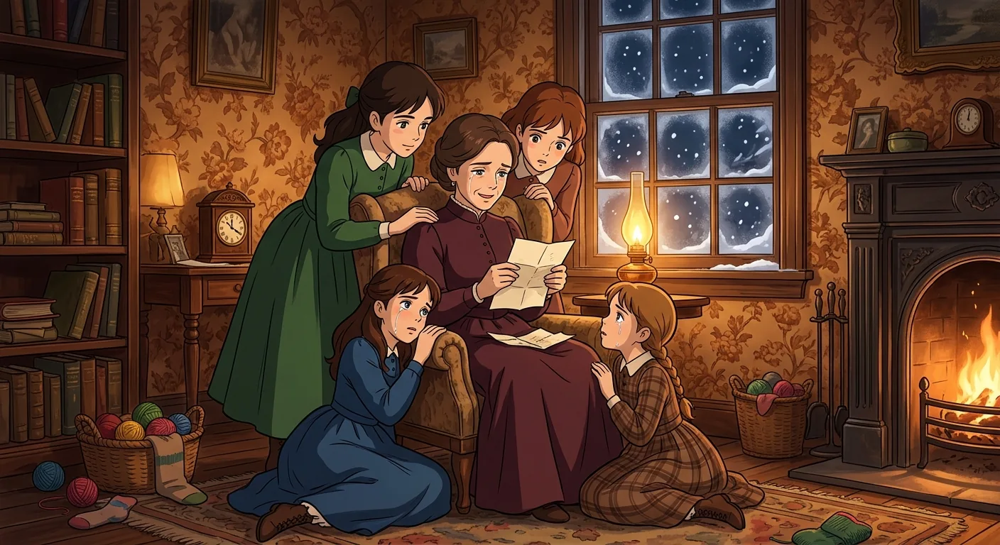
Four Sisters by the Fire
On a December evening, with snow drifting down outside and firelight flickering within, four sisters sat knitting and grumbling by turns, as sisters will. "Christmas won't be Christmas without any presents," Jo declared from her undignified sprawl upon the rug, and so began a chorus of complaints—Meg lamenting her old dress, Amy sniffing over the injustice of other girls possessing pretty things, until gentle Beth reminded them all that they still had Father and Mother and each other. Yet even this cheerful observation could not banish the shadow that fell across their faces, for Father was far away with the army, and the unspoken fear that he might never return hung in the air like the December chill itself.
The March sisters—Meg at sixteen, Jo at fifteen, thirteen-year-old Beth, and twelve-year-old Amy—found themselves caught between the impulse toward small pleasures and the call to sacrifice. Each had a dollar to spend, and each harbored secret wishes: Jo longed for a book, Beth for new music, Amy for drawing pencils, and Meg simply wanted pretty things she could not have. Their mother had proposed a Christmas without gifts, for times were hard and the soldiers were suffering, but the girls could not quite resign themselves to the idea—not yet.
As they debated and squabbled in the manner peculiar to close families, Jo's boyish ways clashed delightfully with Amy's affected airs, until peacemaking Beth sang them into better humor. Meg attempted to lecture her sisters into propriety, though she was hardly less a child herself when it came to playing dress-up for their Christmas theatricals. The conversation wandered from complaints to the play they were rehearsing—Jo's own "Operatic Tragedy" featuring witches and villains—and the parlor filled with melodramatic shrieks and collapsed fainting scenes until laughter chased away all ill temper.
Into this merry chaos stepped Marmee, their tall, motherly, noble-looking mother, carrying the greatest gift of all: a letter from Father. The girls flew about making her comfortable, and at supper she shared the precious pages. Father wrote cheerfully of camp life but closed with words that touched every heart—urging his "little women" to fight their bosom enemies bravely, conquer themselves beautifully, and work so that the hard days would not be wasted. Tears flowed freely then, and each girl resolved to do better: Meg would think less of her looks, Jo would curb her wildness, Amy would be less selfish, and quiet Beth simply took up her knitting with renewed purpose.
It was Marmee who gave their resolutions a shape, reminding them of the childhood game of Pilgrim's Progress—traveling from the cellar's City of Destruction to the housetop Celestial City with bundles on their backs. Now, she said, they might play it in earnest, for their burdens were real enough: vanity, temper, selfishness, and fear. She promised them guidebooks to be found beneath their pillows on Christmas morning. And so the sisters took up their sewing with lighter hearts, dividing the long seams into continents and stitching their way around the world while they talked and planned.
Before bed they gathered around Beth's old piano, singing together as they had done since they could lisp their first nursery rhymes—Meg's flute-like voice, Jo's wandering croak, Amy's chirp, and Beth's gentle accompaniment weaving it all into something whole. It was a household custom as warm and familiar as their mother's lullaby, a small Celestial City they created each night before sleep.
And so the March sisters began their pilgrimage anew, armed with love, good intentions, and the promise of Christmas morning—when the true nature of their journey would reveal itself in four small books waiting beneath four hopeful pillows.
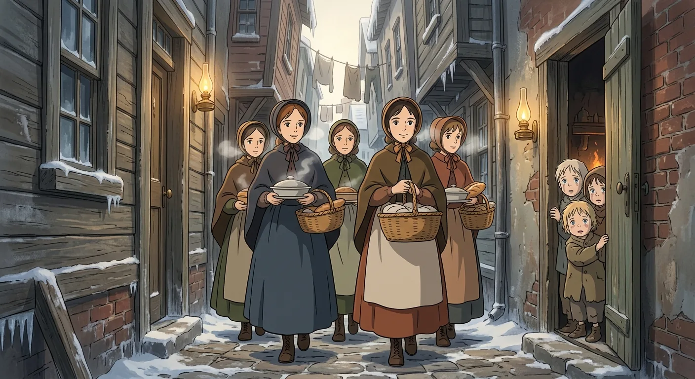
Gifts, Goodness, and Humble Offerings
In the gray hush of Christmas morning, Jo March was first to stir, and though no stockings hung at the fireplace to greet her—those plump, promising stockings of Christmases past—she remembered her mother's promise and slipped a hand beneath her pillow. There lay a small crimson-covered book, that beautiful old story of the best life ever lived, and Jo knew at once it was meant as a guidebook for any pilgrim setting forth on a long journey. She roused Meg with a cheerful "Merry Christmas," and soon all four sisters sat together, each clutching her own little volume—green, dove-colored, blue, and crimson—while the winter sky blushed rosy with the coming day.
It was Meg who proposed, with gentle earnestness, that they return to the faithful habit of reading each morning, a practice neglected since Father went away and the war unsettled everything. Jo leaned cheek to cheek with her elder sister and read in rare quietness, while Beth whispered to Amy that they must follow the example set before them. "I'm glad mine is blue," said Amy, and the rooms grew very still, touched only by the soft turning of pages and the creeping Christmas sun.
When they hurried downstairs to thank Marmee, she had already gone—off to help some poor creature who came begging, as Hannah reported with fond exasperation. The girls busied themselves with the modest presents tucked under the sofa: handkerchiefs marked with Beth's laborious stitching, new army slippers for Jo to dance about in, and Amy's cologne—though that young lady had slipped out early, they soon discovered, to exchange her little bottle for a handsomer one. "I'm truly trying not to be selfish any more," Amy confessed, flushed and humble, and her sisters embraced her warmly for the effort.
But the true test of the morning's lessons came when Mrs. March returned and told her daughters of a poor German family nearby—a sick mother, a newborn babe, six children huddled together with no fire and nothing to eat. Would they give away their breakfast as a Christmas gift? For one hungry minute no one spoke, and then Jo burst out, "I'm so glad you came before we began!" Off they went, a queer little procession through back streets, bearing buckwheats and muffins to the wretched Hummel household. How the pale children's eyes widened! "Ach, mein Gott! It is good angels come to us!" cried the mother, and the March girls—called *Engel-kinder* for the first time in their lives—fed those hungry little ones like so many birds, laughing and talking until comfort filled the bare room. They returned home to bread and milk, yet I think there were not four merrier people in all the city than those hungry girls who gave away their Christmas breakfast.
The remainder of the day belonged to preparations for the evening's theatrical—an *operatic tragedy* of the sisters' own devising, performed with pasteboard guitars, tin-spangled robes, and Jo's treasured russet boots. The melodrama of Hugo the villain, the witch Hagar, and the lovers Roderigo and Zara unfolded with much passion and one spectacular collapse of the tower, burying the unhappy pair beneath the scenery. The audience shrieked, the cot bed folded up beneath them, and all dissolved into laughter just as Hannah appeared to summon the company to supper.
And what a supper! Ice cream, cake, French bonbons, and hothouse flowers adorned the table—a gift, it turned out, from old Mr. Laurence next door, whose lonely grandson had watched the frolic from afar. The girls marveled, Jo declared she meant to know that boy someday, and Marmee smiled at the unexpected kindness. Yet amid the plenty, Beth nestled close and whispered that she wished she could send her flowers to Father, afraid he was not having such a merry Christmas as they.
So the day closed in warmth and gratitude, the little books on their pillows a reminder that the pilgrimage toward goodness had only just begun.
The rest is waiting.
58 illustrated classics. Cinematic, anime, and kids editions. $4.99 a month — about the price of a coffee.
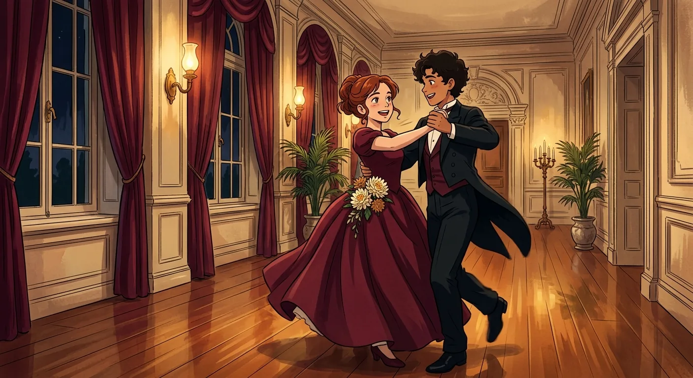
A New Year's Eve Invitation
In the cozy gloom of the garret, where Jo March had tucked herself away with russet apples, a beloved novel, and the companionable company of her pet rat Scrabble, Meg arrived bearing thrilling news: an invitation to Mrs. Gardiner's New Year's Eve dance. The prospect of a real party set both sisters aflutter, though their delight was tempered by the familiar pinch of genteel poverty. What to wear? The poplins, of course—there was nothing else—though Jo's bore an unfortunate burn mark that must be hidden, and her gloves were hopelessly stained with lemonade. After some sisterly negotiation, they settled upon a clever solution: each would wear one good glove and carry one bad, a compromise that satisfied Meg's sense of propriety and Jo's indifference to fashion.
The evening of the party brought the household into a whirl of preparation, with Beth and Amy serving as dressing maids while the elder girls undertook the solemn business of getting ready. Disaster struck when Jo, wielding hot tongs with more enthusiasm than skill, scorched Meg's hair into sad little bundles of frizzle. Tears flowed, apologies tumbled forth, but Amy's practical suggestion—to arrange the ribbon artfully over the damage—saved the day. At last the sisters descended, Meg in silvery drab with her pearl pin, Jo in maroon with a stiff collar and white chrysanthemums, both feeling rather elegant despite their mismatched gloves and Jo's nineteen rebellious hairpins.
At the Gardiners', Meg slipped easily into conversation with her friend Sallie, while Jo stood awkwardly against the wall, her burned breadth hidden but her spirits drooping. When a red-headed young man approached with dancing in his eye, she escaped into a curtained alcove—only to find herself face to face with the mysterious Laurence boy from next door. Their meeting proved serendipitous: both bashful, both feeling out of place, they soon discovered a natural ease in one another's company. Laurie—for that was what he preferred to be called, having thrashed the fellows who dared call him Dora—charmed Jo with tales of his schooling in Switzerland, his winters in Paris, and his fluent French. Jo, in turn, delighted him with her forthright manner and "gentlemanly demeanor," and when she confessed her scorched dress prevented her from dancing, Laurie gallantly proposed they dance in the empty hall where no one would see.
The evening took a painful turn when Meg sprained her ankle in her too-tight slippers, leaving her stranded and unable to walk home. Jo's characteristic resourcefulness might have failed her had Laurie not appeared once more, offering his grandfather's carriage to convey the sisters safely through the rain. They rolled home in unaccustomed luxury, Meg dreaming of future invitations and Jo recounting every detail of her new friendship.
Back in their room, with Beth and Amy bobbing up in their nightcaps demanding to hear everything, the sisters reflected on their adventure. Meg felt quite like a fine young lady, being waited upon by Jo and arnica. But Jo, ever practical and warm-hearted, declared that fine young ladies likely enjoyed themselves no better than the March girls did—burned hair, old gowns, mismatched gloves, and all.
And so, with a new friendship kindled and the memory of waltzing in an empty hall, the sisters drifted toward sleep, unaware of how thoroughly this chance meeting with their young neighbor would soon weave itself into the fabric of their days.
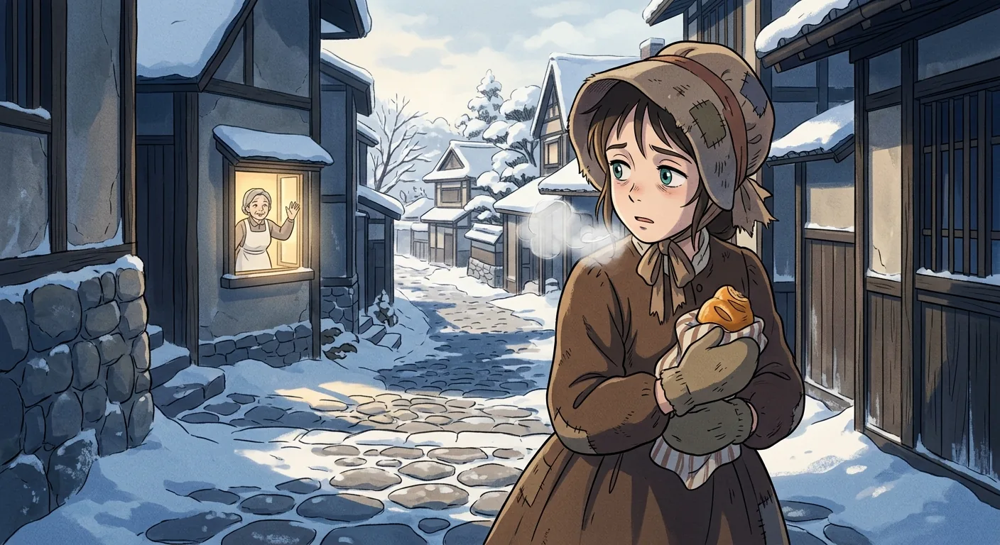
Shouldering the Daily Burdens
The morning after the Gardiners' party dawned gray and cheerless, and the March household seemed to have caught the very spirit of the weather. Meg sighed over her shabby gowns, Jo yawned dismally, and the brief holiday of merrymaking had left them all ill-fitted for the resumption of their daily labors. It was one of those mornings when even the most cheerful pilgrim might wish to set down her pack and rest awhile longer by the fire.
And what a cross family they were! Beth lay upon the sofa nursing a headache and three kittens, Amy wept over sums she could not remember, Jo made a great racket and upset the inkstand, and Meg snapped at everyone within reach—including the unfortunate kitten clinging to her back. Even patient Marmee, bent over a letter that must catch the early mail, cried out for quiet, while Hannah stalked through the chaos with her grumps plainly written upon her face. Yet even in her ill temper, that faithful servant did not forget the hot turnovers—those humble "muffs" that warmed the girls' hands on their long, bleak walk to work, for they would have no other lunch until they returned home past two o'clock.
Jo rallied first, as was her way, declaring them all a set of rascals who would return as regular angels, and off the two elder sisters trudged through the bitter wind. They looked back at the corner, as they always did, to catch their mother's wave from the window—that motherly sunshine without which they could scarcely have faced the day. Jo's conscience pricked her sharply, and she called herself an ungrateful wretch, though Meg, shrouded in her veil like a nun sick of the world, begged her not to use such dreadful expressions. But Jo's nonsense about future fortunes, carriages, ice cream, and red-headed dancing partners soon coaxed a laugh from her sister, and they parted in better spirits, each hugging her little warm turnover against the cold.
Here the story pauses to explain how the March girls came to shoulder such burdens. When Mr. March lost his property helping an unfortunate friend, Meg and Jo begged to contribute to the family's support. Meg found a place as nursery governess to four spoiled children at the Kings', where she daily witnessed the luxuries she could not share and struggled against the bitterness of envy. Jo went to attend crotchety Aunt March, enduring that peppery old lady's demands in exchange for stolen hours in Uncle March's glorious library, where she devoured books like a regular bookworm until the shrill cry of "Josy-phine!" summoned her back to wind yarn or wash the poodle.
Gentle Beth, too bashful for school, kept house with Hannah, peopling her quiet days with imaginary friends and a hospital of cast-off dolls whom she nursed with unfailing tenderness. And little Amy bore her own trials—her flat nose, her cousin Florence's ill-fitting purple gown with yellow sky-rockets, and the constant threat of public humiliation at school.
That evening, gathered with their sewing, the sisters shared the day's adventures: Jo's triumph in winning Aunt March over to *The Vicar of Wakefield*, Meg's sober tale of disgrace in a wealthy family, Amy's account of poor Susie Perkins led by the ear before the whole school, and Beth's sweet story of old Mr. Laurence secretly giving a fish to a hungry mother. Then Marmee told of meeting an old man who had given four sons to the war without grudging, and followed it with a pointed little fable about four girls who learned to count their blessings instead of their wants. The sisters recognized themselves at once, and though Jo could not resist a bit of fun, quoting old Chloe's "Tink ob yer marcies, chillen!"—they took the lesson to heart, resolving to shoulder their burdens more cheerfully and be grateful for what they had.
Yet resolutions, as the girls well knew, are easier made than kept, and the very next day would bring fresh trials to test their pilgrim spirits.
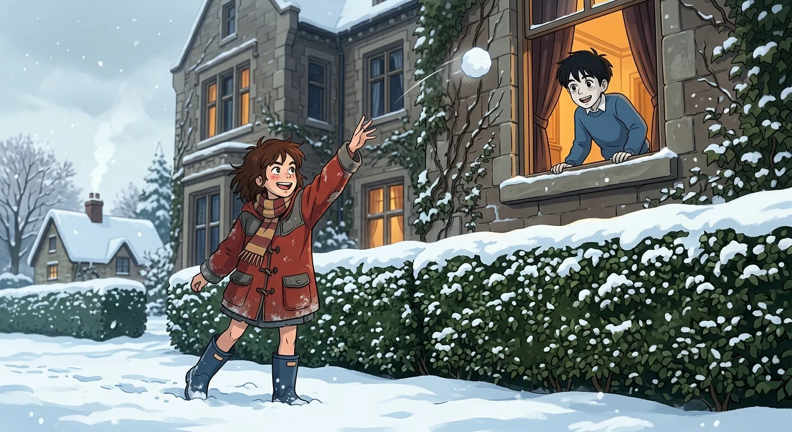
Crossing the Hedge to Friendship
On a snowy afternoon when sensible Meg sat toasting her feet by the fire with *Ivanhoe*, restless Jo bundled herself in rubber boots and old sack, armed with broom and shovel, and set off in search of adventure. She found it waiting just beyond the low hedge that separated the shabby, vine-stripped March cottage from the stately Laurence mansion—that grand stone house which, for all its conservatories and rich curtains, seemed to Jo a lonely, lifeless enchanted palace where no children played and no motherly face appeared at the windows.
While clearing snow paths for Beth's invalid dolls, Jo spied a curly dark head at an upper window—young Laurie, gazing wistfully down at the sisters' merry snow-balling. The sight of his solitary, hungry expression stirred her warm heart at once. Here was a boy suffering for society and fun, she decided, shut up by a well-meaning grandfather who did not understand what was good for him. And so, with characteristic boldness, Jo tossed up a snowball to catch his attention and called out a cheerful greeting that brightened his pale face in an instant.
Learning that Laurie had been ill and confined for a week with nothing but dull books and loneliness for company, Jo proposed herself as visitor. After securing Marmee's blessing, she marched over with Beth's three kittens tucked under one arm and a dish of Meg's prettiest blanc mange in the other—small tokens from each sister eager to share their abundance of love with one who had so little. The kittens proved just the thing; Laurie forgot his bashfulness in laughing over them, and the two young people fell into easy conversation as though they had been friends for years.
Jo whisked his untidy parlor into order, then entertained him with lively tales of cross Aunt March, her Spanish-speaking parrot, and the prim suitor whose wig Poll once tweaked clean off his head, until Laurie lay back on the sofa, red-faced with merriment. They discovered a mutual passion for books, and soon Laurie led Jo downstairs to the library—a paradise of volumes, curiosities, and a great open fireplace that made her clap her hands and prance with delight.
It was there that old Mr. Laurence surprised her, overhearing her frank assessment of his portrait—kind eyes, grim mouth, tremendous will, and not quite so handsome as her own grandfather. Poor Jo blushed crimson, yet she stood her ground with honest answers that pleased the gruff old gentleman immensely. He recognized in her the spirit of her grandfather, his old friend, and invited her to stay for tea. Over four cups, he watched the color and life return to his grandson's face and resolved privately that these little girls might do the lonely boy a world of good.
Before Jo departed, Laurie played the grand piano for her—remarkably well, she thought, though the music seemed to trouble his grandfather. He cut her an armful of conservatory flowers for Marmee, and at the door they exchanged promises: she would come again, and he would visit the Marches once he was well. Back home, the whole family grew eager to know the Laurences better—Marmee to speak of her father's old friend, Meg to stroll the conservatory, Beth to hear the piano, Amy to admire the pictures and statues.
When Jo wondered aloud why the old man had frowned at Laurie's playing, Marmee explained the sad romance behind it: Laurie's father had defied his own father by marrying an Italian musician, and though she was good and lovely, Mr. Laurence never forgave the match. Both parents died when Laurie was small, leaving the boy to be raised by a grandfather who feared losing him and dreaded any reminder of the daughter-in-law he could not accept. This revelation struck the sisters variously—romantic to sentimental Meg, silly to practical Jo—but it was quiet Beth who saw deepest, murmuring that perhaps the grand house full of splendors was meant to be their Palace Beautiful, the next stage in their *Pilgrim's Progress* toward becoming the best versions of themselves.
Jo, never one to shrink from a challenge, grinned at the prospect of the lions yet to be conquered on the path ahead.
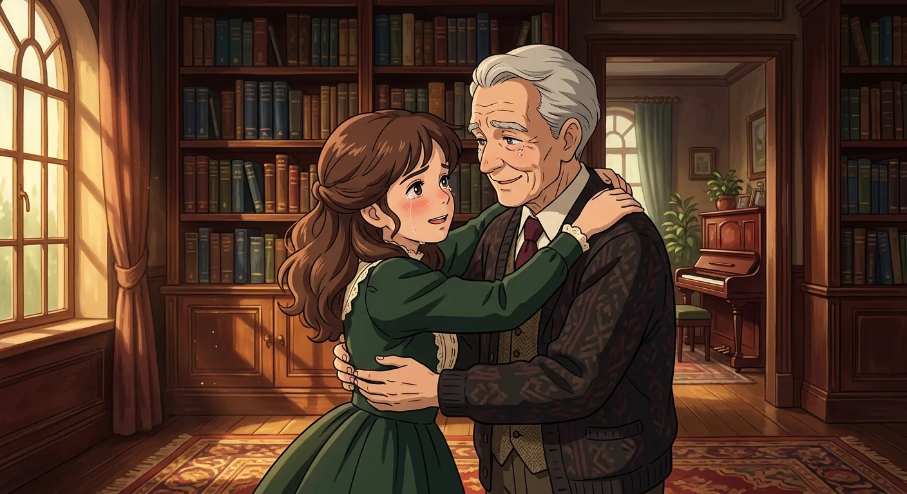
Beth's Courage and the Grand Piano
The grand Laurence house next door, which the sisters had christened the "Palace Beautiful," soon opened its treasures to each of the March girls—though not without requiring them first to conquer certain lions that guarded its gates. The most formidable of these was old Mr. Laurence himself, whose heavy brows and gruff manner might have frightened any timid soul. Yet once he had called upon the family, shared a kind word with each girl, and revisited old memories with Marmee, even that fierce lion proved wonderfully tame. The other lion—the awkward matter of the Marches being poor while the Laurences were rich—soon dissolved as well, for Mr. Laurence made it plain that he considered *himself* the debtor, grateful beyond measure for the motherly welcome and cheerful society that flowed so freely from that humble cottage next door.
And so a happy commerce of kindnesses sprang up between the two households. Laurie, that lonely boy starved for companionship, found himself adopted wholesale by the sisterhood, and they in turn delighted in him. Meg wandered through the conservatory admiring hothouse blooms, Jo devoured the library with her usual voracity and amused the old gentleman with her bold literary opinions, and Amy copied pictures to her heart's content. Even Mr. Laurence remarked to Laurie's tutor that the boy's truancy was doing him far more good than any lesson might.
But Beth—dear, shrinking Beth—could not bring herself to cross that threshold, not even for the grand piano that called to her musical heart. One unfortunate visit with Jo had ended in disaster when Mr. Laurence, unaware of her painfully shy nature, had bellowed "Hey!" in such a startling fashion that the poor child's very feet seemed to chatter upon the floor. She fled home vowing never to return.
Yet somehow word of Beth's longing reached the old gentleman's ear, and he set about mending matters with a craftiness worthy of a far younger schemer. During a call upon Marmee, he steered the conversation artfully toward music—great singers, fine organs, charming anecdotes—until Beth crept nearer and nearer, quite unable to help herself. Then, as though the notion had only just struck him, he mentioned that Laurie's piano stood neglected and might benefit if one of the young ladies would practice upon it now and then. The household would be empty, he assured them; no one need see or hear her.
It was an irresistible gift, and Beth, summoning all her courage, slipped her small hand into his and whispered her thanks. The old gentleman, deeply moved, kissed her forehead and murmured that she reminded him of a little girl he had once lost—then hurried away before sentiment could undo him entirely.
From that day forward, Beth haunted the great drawing room like a tuneful spirit, never knowing that Mr. Laurence opened his study door to listen, or that Laurie stood guard in the hall to shoo servants away. Gratitude swelled within her until she simply *had* to thank him properly, and so she stitched a pair of purple slippers embroidered with heart's-ease pansies. In return came a gift that stole her breath: a little cabinet piano that had belonged to his lost granddaughter, accompanied by a letter addressing her as "Dear Madam."
Overwhelmed, Beth did what no one thought possible—she marched straight to the great house, knocked upon the study door, and, forgetting every rehearsed word, flung her arms around the astonished old gentleman's neck. From that moment, fear fled and friendship bloomed, leaving her sisters gaping in delighted disbelief—for if timid Beth could conquer *this* lion, surely any wonder might follow.
And yet, even as the March household marveled at Beth's transformation, life beyond their little circle was quietly shifting, carrying with it changes none of them had yet imagined.
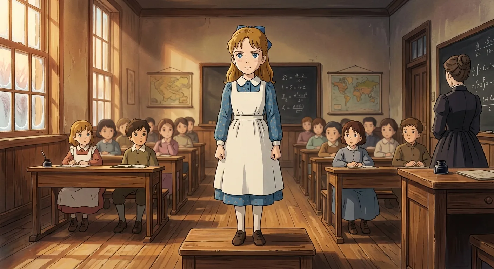
Pickled Limes and Schoolroom Justice
The chapter opens with a burst of sisterly banter that reveals Amy's endearing tendency toward verbal mishaps—she calls Laurie a "cyclops" when she means a centaur, and compounds the error with a "lapse of lingy" instead of "lapsus linguae," sending Jo into gales of laughter. Yet beneath the merriment lies a more pressing concern: Amy confesses herself "dreadfully in debt," owing at least a dozen pickled limes to her schoolmates. These tart little fruits have become the reigning currency of her set, traded for pencils and paper dolls, offered as tokens of friendship or withheld as pointed snubs. To be limeless is to be thought mean, and Amy has been suffering in genteel silence. Kind Meg presses a quarter into her sister's palm, and the next morning Amy arrives at school bearing a moist brown-paper parcel of twenty-four limes—well, twenty-three, for she has already succumbed to temptation on the walk—feeling herself restored to social eminence.
Her triumph proves short-lived. When Amy's beautifully drawn maps earn praise from a distinguished visitor, the honor rankles in the soul of Jenny Snow, a satirical young lady whom Amy has recently cut with withering finality. Revenge comes swiftly: Jenny informs Mr. Davis that Amy March has contraband limes in her desk. The tyrannical schoolmaster, already in a foul temper from strong coffee and an east wind, seizes upon the infraction with grim relish. He commands Amy to throw her precious limes out the window two by two, and the girls watch in collective anguish as each plump, juicy pair falls to the street below, where ragged Irish children shout with glee over the windfall.
But the humiliation does not end there. Mr. Davis has vowed to ferrule the first offender, and he is not a man to break his word. Amy, too proud to cry or beg, sets her teeth and bears several tingling blows upon her little palm—the first she has ever received in her twelve years of life. Then she is made to stand on the platform before the whole school, motionless and white, enduring fifteen minutes that feel like an hour. The smart of her hand and the ache of her heart fade beside the sting of knowing she must tell her family.
At home, an indignation meeting convenes. Meg bathes the insulted hand with glycerine and tears, Beth hovers in sympathetic distress, Jo wrathfully proposes Mr. Davis's arrest, and Hannah pounds potatoes as though the schoolmaster lay beneath her pestle. Mrs. March comforts her daughter but does not excuse her: Amy broke the rules and deserved some punishment, though not this particular degradation. More pointedly, Marmee observes that her youngest has grown rather conceited, and this public mortification may do her more good than a gentler correction. True talent and goodness, she counsels, need no parading; the great charm of all power is modesty.
The lesson settles into Amy's heart that evening as Laurie, playing chess with Jo, praises Beth's musical gift—a gift Beth herself scarcely recognizes. Watching her modest sister blush and hide her face, Amy begins to understand what her mother means. "It's nice to have accomplishments and be elegant," she reflects, "but not to show off or get perked up." Jo caps the sermon with a quip about wearing all one's bonnets at once, and the family's laughter signals that Amy's valley of humiliation, painful as it has been, may yet yield the fruit of genuine growth—a lesson she will carry with her as the sisters navigate the challenges still to come.
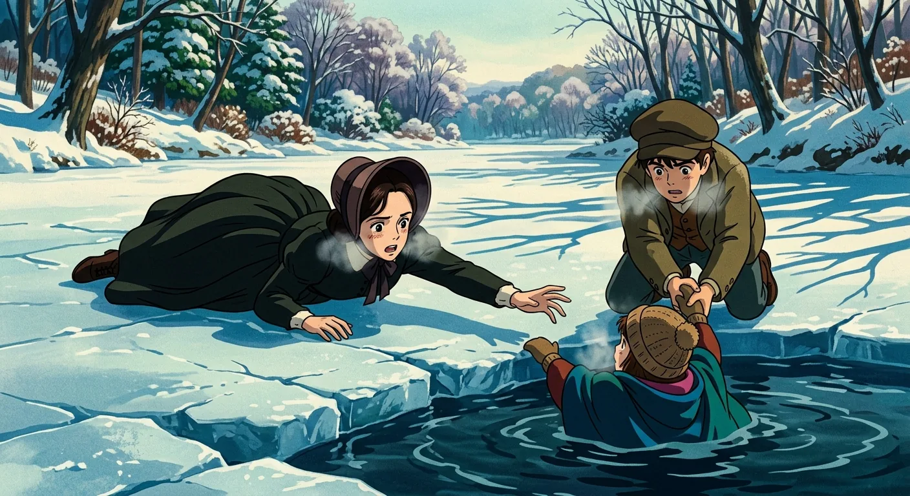
Jo's Fury and Amy's Revenge
On a Saturday afternoon thick with sisterly secrets, Meg and Jo readied themselves for an outing, and Amy—left behind with no occupation save her own restless curiosity—demanded to know where they were going. Jo's sharp dismissal only fanned the flame; there is nothing quite so maddening to a young person as being told she is too little to ask questions and ought to run along. Amy, never one to suffer an insult quietly, soon pieced together the truth: they were bound for the theater with Laurie to see *The Seven Castles of the Diamond Lake*, that dazzling fairy spectacle all the town was talking about. She pleaded, she cajoled, she invoked their mother's permission and her own hoarded "rag money," but Jo would not budge. Laurie had invited only the two of them, and dragging Amy along would spoil everything. Harsh words flew, and Amy, one boot on and tears streaming, called down the banisters a promise that would echo long afterward: "You'll be sorry for this, Jo March—see if you ain't."
Jo slammed the door with a dismissive "Fiddlesticks!" and off the merry party went. The play was everything brilliant and wonderful, yet Jo's pleasure carried a bitter drop; the fairy queen's golden curls reminded her of Amy, and she wondered uneasily what revenge her little sister might be plotting. She had not long to wait. The next afternoon Jo burst upon her sisters demanding to know who had taken her manuscript—the half-dozen fairy tales she had labored over for years, carefully copied out and meant to be finished before Father came home. Amy's rising color betrayed her, and when pressed, she delivered her verdict with reckless triumph: she had burned it.
What followed was a tempest worthy of the chapter's title. Jo shook her sister until her teeth chattered, boxed her ear, and stormed up to the garret, where she finished her fight alone. Even Marmee's gentle intervention could not coax forgiveness from Jo that night; she refused Amy's tearful apology and went to bed with a heart as hard as stone. All felt the breach in the household harmony—the evening songs fell flat, and the sweet home peace lay shattered.
The next day brought no softening, only a cold so bitter that Jo dropped her precious turnover in the gutter and endured Aunt March's fidgets with gritted teeth. At last, desperate for kindness, she seized her skates and set out with Laurie for the river. Meg, hopeful as ever, urged Amy to follow and make peace at the right moment. Amy ran after them, but Jo, still nursing her wrath, would not turn around. Laurie's warning—"Keep near the shore; it isn't safe in the middle"—reached Jo's ears, yet she let the little demon in her heart whisper that Amy could look out for herself. An instant later came a terrible crash of rotten ice, a splash, a cry, and Amy's small blue hood bobbing in the black water.
It was Laurie who kept his head, lying flat on the ice and holding Amy up while Jo dragged a rail from the fence. Together they pulled the shivering child to safety and hurried her home. That night, beside Amy's blanket-wrapped, sleeping form, Jo poured out her remorse to Marmee, confessing the dreadful temper she feared would spoil her life. And Marmee, in one of the tenderest conversations a mother and daughter ever shared, revealed her own lifelong struggle with the same quick anger—and the patient, prayerful effort that had taught her, if not to banish it, at least to govern it. She spoke of Father's gentle reminders, of the strength drawn from a Heavenly Friend whose love never tires, and of the sweetness that comes from self-denial and self-control.
Jo listened, humbled and hopeful, resolving to watch and pray over her "bosom enemy." When Amy stirred and opened her arms, the sisters embraced without a word, and everything was forgiven in one hearty kiss—leaving Jo to carry into the days ahead a hard-won lesson about the cost of anger and the grace of reconciliation.
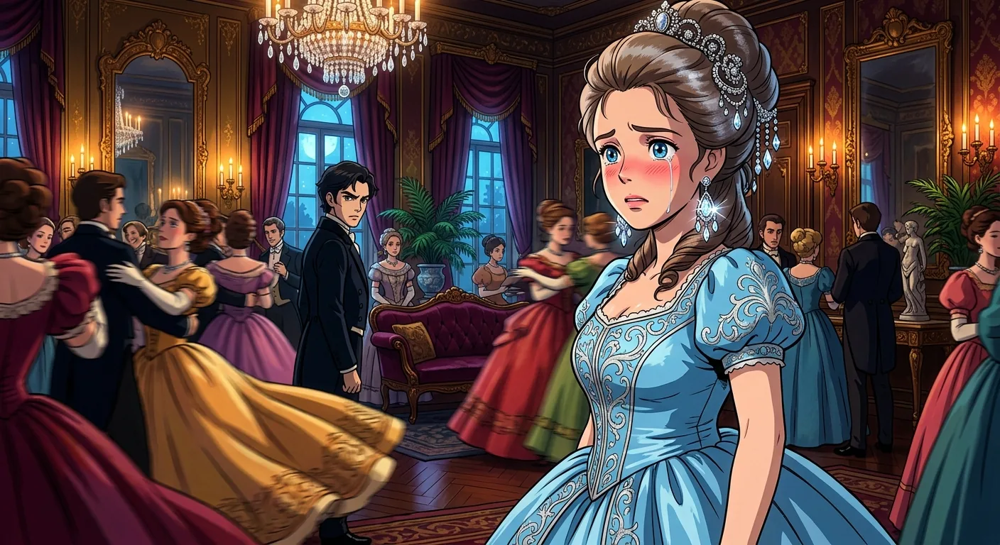
Meg's Taste of Fashionable Life
The April morning dawned bright with promise as Meg stood amid a flutter of sisterly industry, the little room transformed into a scene of cheerful preparation. Fortune had smiled upon her most conveniently—the Moffat children falling ill with measles at precisely the moment to honor Annie's long-standing invitation—and now a whole fortnight of fashionable pleasure stretched before her like a golden road. Jo folded skirts with her long arms working like windmill sails, Beth sorted ribbons with her customary quiet tidiness, and Amy, pins bristling from her mouth, replenished the cushion with artistic care, all of them lending what they could to outfit their elder sister for her great adventure.
From the family treasure chest, Mrs. March had bestowed silk stockings, a carved fan, and a blue sash—though Meg could not help sighing over the violet silk there was no time to make over. Her umbrella, green with a yellowish handle rather than the black with white she had wished for, troubled her more than she cared to admit, yet she resolved not to wound Marmee's feelings over such nonsensical notions. Still, even as she declared herself perfectly happy, wise little Beth observed that wanting seemed only to grow with getting—a truth Meg acknowledged with a rueful laugh before cheering herself with thoughts of the pleasures ahead.
At the Moffats' splendid house, simple Meg found herself dazzled and then, by degrees, transformed. The family proved kindly enough beneath their gilding, though perhaps not so cultivated as their fine surroundings suggested. Meg took readily to sumptuous fare, elegant carriages, and the wearing of her best frock daily. She began to imitate the manners around her, crimping her hair, taking in her dresses, and acquiring little airs until home seemed bare and her lot quite pitiable—despite those new gloves and silk stockings that had lately been her comfort.
The small party brought her first taste of mortification, her worn tarlatan looking limper than ever beside Sallie's crisp new gown. Yet when Laurie's flowers arrived—roses and ferns with a loving note from Marmee tucked within—Meg's spirits lifted. She made dainty bouquets for her friends, and the kind act banished her despondency, proving that generosity of heart outshines any finery. That evening she danced and sang and collected compliments, feeling almost triumphant—until she overheard the gossip behind the conservatory wall. Mrs. Moffat's insinuations about her mother's scheming, the pitying remarks about her "dowdy tarlatan," and knowing glances concerning Laurie opened a new and troubling world to innocent Meg, disturbing the peace she had always known.
On Thursday came the transformation complete. Belle and her maid crimped, powdered, and laced Meg into a borrowed sky-blue silk so tight she could scarcely breathe, so low she blushed at her own reflection. Silver filigree, silk boots, and borrowed earrings completed the picture of a fine lady—or, as Major Lincoln would say, "nothing but a doll." When Laurie's honest eyes met hers across the drawing room with undisguised disapproval, Meg felt the sting of his blunt verdict: "I don't like fuss and feathers." Though they later made peace over a waltz, she extracted his promise of silence, knowing Marmee would not understand the joke.
Home at last, weary and headachy from champagne and romping, Meg sat before the fire with her mother and Jo and made her confession—the powder and frizzling, the flirtation and foolishness, and worst of all, the vulgar gossip that had tainted her innocent friendship with Laurie and shaken her faith in those she loved. Mrs. March listened gravely, grieved at the mischief wrought by worldly company, yet her counsel carried hope rather than reproach. She spoke of her own plans for her daughters—not marriages made for money or position, but unions blessed by love, respect, and contentment. Better poor men's wives, if happy and beloved, than queens without peace.
As mother and daughters clasped hands in renewed understanding, Jo sensed that Meg had grown and changed during her fortnight away, drifting toward a world of admirers and romance where Jo could not easily follow—a world whose threshold she herself might one day be called to cross.
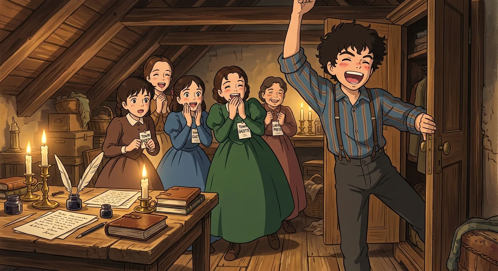
Sisters, Secrets, and the Pickwick Club
With the arrival of spring, the March household stirred into new rhythms of work and play, the lengthening days offering ample time for both. The garden demanded attention, and each sister claimed her quarter of the plot, cultivating it according to her own nature—so distinctly that Hannah declared she could recognize any one of them even if transported to China. Meg's patch bloomed with roses and heliotrope, myrtle and a small orange tree, all fragrant propriety. Jo's bed changed yearly with her restless experiments; this season she had determined upon sunflowers, their cheerful seeds destined to feed Aunt Cockle-top and her brood of chicks. Beth planted old-fashioned, fragrant flowers—sweet peas and mignonette, larkspur and pansies—with chickweed for the birds and catnip for the cats, a garden as gentle and giving as its keeper. Amy constructed a bower, admittedly small and somewhat earwiggy, but draped in honeysuckle and morning-glories, white lilies rising tall among delicate ferns, the whole arrangement as picturesque as its creator could manage.
Beyond gardening, the girls filled their fine days with walks and rows upon the river, and when rain kept them indoors, they turned to house diversions both old and new. Chief among these was the Pickwick Club, or P.C.—a secret society named in honor of their beloved Dickens. For a year, with few interruptions, the four sisters had gathered every Saturday evening in the big garret, donning white badges marked with colored initials and assuming their Pickwickian identities with great solemnity. Meg, the eldest, presided as Samuel Pickwick himself; Jo, being of a literary turn, became Augustus Snodgrass; rosy Beth was Tracy Tupman; and Amy, forever attempting what lay just beyond her reach, took the role of Nathaniel Winkle. Each meeting featured the reading of *The Pickwick Portfolio*, their weekly newspaper filled with original tales, poetry, local news, and good-natured hints reminding one another of faults and shortcomings.
The evening's paper proved as lively as ever—a stirring ode celebrating their fifty-second anniversary, a romantic tale of masked marriage in Venice, the sad history of a squash told with deadpan simplicity, a humble apology from Winkle for past misdemeanors, and a touching lament for the departed Mrs. Snowball Pat Paw. Advertisements promised lectures from Miss Oranthy Bluggage and the debut of a thrilling new drama, while the weekly hints gently chided various members for their small domestic failings.
But the evening's true excitement arrived when Snodgrass rose to propose a new member: Theodore Laurence. The suggestion sparked debate—Amy worried boys would only joke and bounce about, and Meg feared Laurie might laugh at their efforts—but Jo argued passionately that Laurie deserved the honor and would add immensely to the club's spirit. Beth's unexpected support proved decisive, and when the vote passed, Jo flung open the closet door to reveal Laurie himself, flushed with suppressed laughter, having been hidden there all along.
Assuming the name Sam Weller, the new member charmed them all with his gracious thanks and a practical gift: a post office established in the old martin house at the hedge's corner, fitted with padlocks and ready to carry letters, manuscripts, bundles, and all manner of correspondence between the two households. The meeting adjourned late amid shrill cheers, and no one ever regretted admitting Sam Weller, whose contributions proved patriotic, classical, comical, and dramatic—never sentimental.
The P.O. flourished wonderfully, carrying tragedies and cravats, poetry and pickles, garden seeds and puppies, even a love letter from Mr. Laurence's smitten gardener to Hannah, passed through Jo's care to much laughter. None of them could have dreamed then how many love letters that little post office would hold in the years to come—or how swiftly such years would arrive, bringing changes none could foresee.
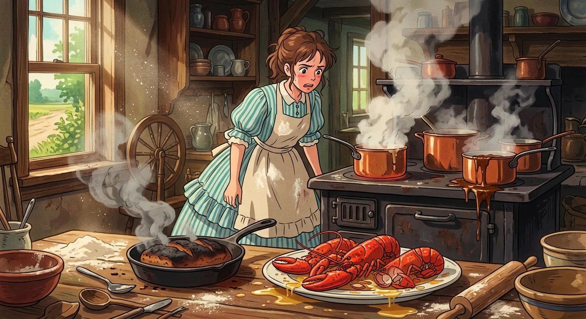
Summer Idleness Teaches Its Lesson
The first day of June dawned warm and golden, bringing with it that most delicious of gifts: freedom. Meg returned from the Kings' household to find her sisters already luxuriating in the prospect of a summer unshackled from labor—Jo sprawled exhausted upon the sofa after narrowly escaping Aunt March's invitation to dreary Plumfield, Beth tenderly removing her sister's dusty boots, and Amy concocting lemonade while mangling the English language with her characteristic flair, pronouncing their formidable aunt a "samphire" when she meant vampire. The four sisters, giddy with anticipation, proposed to their mother an experiment in pure idleness: no lessons, no duties, nothing but rest and revelry for the whole of their vacation.
Mrs. March, with that knowing look mothers so often wear, granted them one week to test their theory, quietly predicting that all play and no work would prove just as wearisome as its opposite. The girls dismissed her wisdom with merry confidence, toasting "Fun forever, and no grubbing!" before settling into what they imagined would be paradise.
Yet paradise, it seemed, required more than lounging. By the first evening, cracks had already appeared in their blissful scheme—Meg's impulsive purchase of blue muslin wouldn't wash, Jo had scorched her nose boating and given herself a headache with too much reading, Beth's closet lay in hopeless disarray, and Amy found herself with nothing to wear to Katy Brown's party. Still, none would confess their discomfort, and so the experiment lurched onward while Marmee and Hannah quietly shouldered the neglected housework that kept their home running smoothly.
As the days stretched longer and more tedious, Satan indeed found mischief for their idle hands. Meg spoiled her clothes attempting fashionable alterations; Jo grew so restless she quarreled even with patient Laurie; gentle Beth snapped at her dolls; and Amy, bored beyond endurance, complained that staying home with "three selfish sisters and a grown-up boy was enough to try the patience of a Boaz." By Friday, each privately rejoiced that the week was nearly finished.
But Mrs. March, possessing both wisdom and humor in equal measure, resolved to impress the lesson more deeply still. Saturday morning found no fire in the kitchen, no breakfast on the table, and Marmee retreating to her room, declaring she too deserved a holiday from their neglected responsibilities. The girls took hold with willing hands—only to discover that "housekeeping ain't no joke." Jo, ambitious and overconfident, invited Laurie to dinner and attempted a feast of asparagus, lobster, and blanc mange that ended in magnificent disaster: heads boiled off the stalks, bread burned black, and strawberries dressed with salt instead of sugar, swimming in sour cream. The unfortunate meal concluded in helpless laughter rather than tears, rescued by bread, butter, and good humor.
Yet the day's sorrows were not finished. Beth discovered her canary Pip dead in his cage, starved through her neglect—the cruelest consequence of their careless week. A small funeral followed the dinner party, the little bird laid to rest beneath the ferns with an epitaph Jo had composed between cooking catastrophes.
When evening gathered the weary sisters on the porch among the budding June roses, not one wished to continue the experiment. Marmee's gentle questions drew from them the admission that lounging and larking did not pay—that the comfort of home depended upon each doing her share faithfully, and that work, rather than being a burden, was wholesome medicine against ennui and selfishness. One by one they pledged new resolutions: Jo would learn plain cooking, Meg would sew Father's shirts, Beth would attend to her lessons, and Amy would master buttonholes and her parts of speech.
With her daughters gathered close, Mrs. March offered her quiet benediction: have regular hours for work and play, make each day both useful and pleasant, and life would become a beautiful success. The girls promised to remember—and this time, they truly did, carrying that hard-won wisdom forward into the summer days that lay ahead.
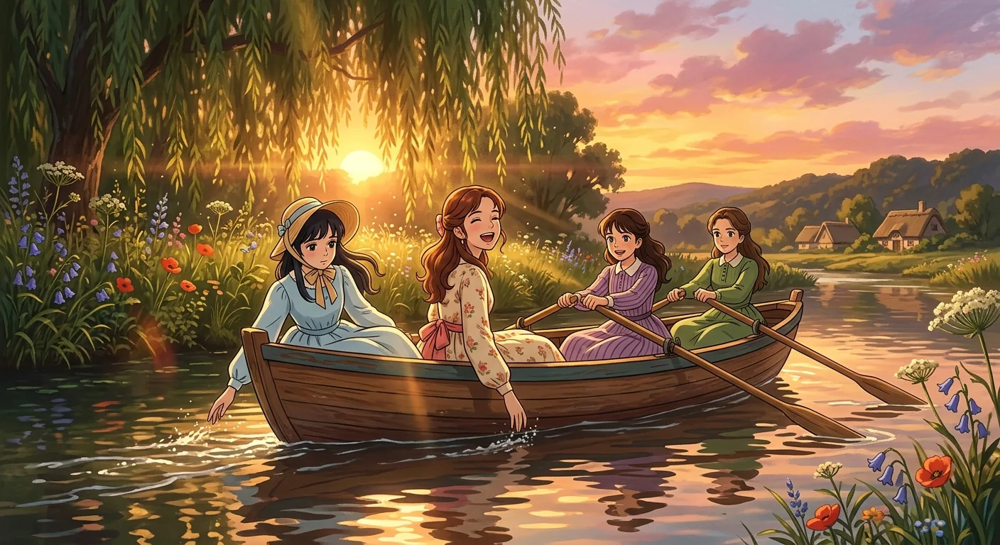
Summer Picnics and Secret Encouragements
On a bright July morning, Beth March—the household's faithful postmistress—made her cheerful rounds distributing the day's mail, that modest but much-anticipated ritual which kept the little family bound in tender connection to the wider world. Among the parcels and letters came Laurie's customary nosegay for Marmee, a single gray glove for Meg (its mate mysteriously absent), and for Jo, a comically oversized old hat sent by their mischievous neighbor to encourage her disregard for fashion. But tucked within Jo's bundle lay something far more precious: a letter from her mother, quietly acknowledging the fierce battle Jo had been waging against her quick temper. That small note, confessing what Jo had believed no one could see—her daily struggles, her earnest prayers over the well-worn guidebook—moved her to happy tears and strengthened her resolve to keep fighting her private Apollyon.
Hard upon this tender moment came Laurie's exuberant invitation to a picnic at Longmeadow, promising tents and croquet and gypsy-style cookery for a party of English visitors, the Vaughns, along with the familiar faces of Mr. Brooke, Ned Moffat, and Sallie Gardiner. The March girls prepared with characteristic individuality—Meg curling her hair, Jo slathering cold cream on her sunburned face, Beth clutching her beloved doll Joanna in apology for the coming separation, and Amy clamping a clothespin upon her nose in hopeful cosmetic improvement. The sun himself seemed to laugh at their efforts, bursting forth in radiant promise of a perfect summer's day.
At Camp Laurence, beneath wide-spreading oaks, the party assembled in lively spirits. Jo's ridiculous hat proved useful after all, breaking the ice and shading her from the sun, while Beth quietly resolved to be kind to lame Frank Vaughn rather than fear him. The croquet match that followed tested more than skill; when Fred Vaughn slyly nudged his ball through a wicket, Jo's temper flared dangerously. Yet she held her tongue, retreating among the nettles until she could master herself, then returned to win the game with generous restraint—leaving Kate's ball untouched rather than stooping to petty revenge. Meg's whispered praise and Laurie's knowing wink confirmed that the victory was double: over both the English team and her own fierce nature.
Over lunch and games of Rigmarole and Truth, the characters revealed themselves more fully. Mr. Brooke's allegorical story of a knight seeking a princess behind a thorny hedge drew thoughtful glances, while Miss Kate's patronizing manner toward Meg—a governess, how dreadful!—was gently rebuked by the tutor's quiet defense of American independence. Beth, forgetting her shyness, found herself talking buffaloes and prairies with Frank, earning her sisters' delighted admiration. And through it all, the threads of affection and aspiration wove themselves more tightly: Meg's awareness of Mr. Brooke's steady gaze, Jo's growing mastery of her temper, Beth's courage in kindness, Amy's innocent social ambitions.
As sunset gilded the river and the party floated homeward singing, even the haughty Miss Kate confessed that American girls, for all their demonstrative manners, were very nice when one knew them—a sentiment Mr. Brooke quietly seconded. The sisters returned through the garden with hearts full of summer's sweetness and the quiet knowledge that their characters, like the day itself, had been tested and found stronger for the trial.
Yet the mild adventures of Camp Laurence would soon give way to sterner lessons, as autumn approached with its own particular trials of temper, patience, and sisterly devotion.
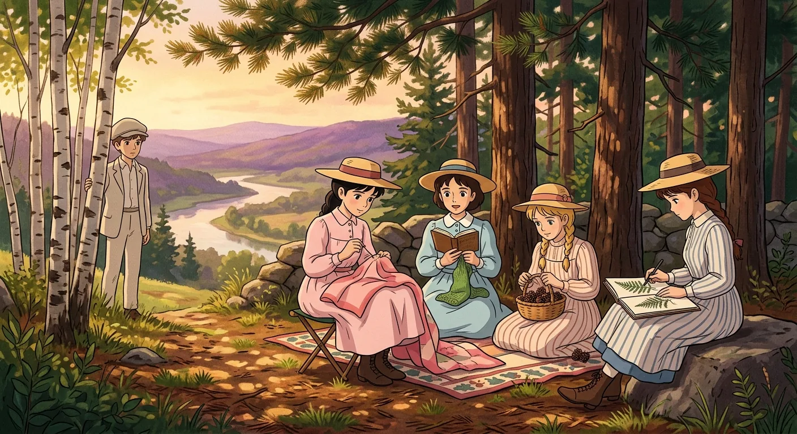
Dreams and Schemes in the Pines
On a drowsy September afternoon, young Laurie found himself draped across his hammock in a most disagreeable temper, having squandered the day in a string of petty mischiefs and quarrels that left him thoroughly out of sorts with himself and all the world besides. He had vexed his tutor, displeased his grandfather with too much piano practice, terrorized the servants with talk of a mad dog, and exchanged sharp words with the stableman—all before flinging himself into idleness to brood upon the general stupidity of existence. Yet even the most restless spirit cannot hold out forever against the gentle persuasions of a fine September day, and Laurie was just beginning to dream himself aboard a ship bound for distant shores when voices from the March garden roused him to attention.
Peering through the hammock's meshes, he spied the four sisters marching out in the most peculiar fashion—each wearing a broad-brimmed hat and carrying a staff, with pouches slung over their shoulders like little pilgrims setting forth on a journey. Meg bore a cushion, Jo her book, Beth a basket, and Amy her sketching portfolio. Curiosity quite conquering his languor, Laurie snatched up a hat and the boathouse key, thinking they had forgotten it, and scrambled after them up the hill that rose between the houses and the river.
He found them not at the boat but in a shady pine grove, a picture of industrious contentment that made his own wasted day seem all the more foolish. There sat Meg sewing prettily in her pink dress, Beth sorting pine cones for her craft work, Amy sketching ferns with careful strokes, and Jo knitting while she read aloud. A shadow crossed the boy's face as he watched, feeling keenly that he was an intruder upon this peaceful scene—yet lonely home seemed a poor substitute for such cheerful company. It was gentle Beth who spied his wistful face through the birches and beckoned him forward with her quiet smile.
Once admitted to what Jo grandly termed their "Busy Bee Society," Laurie learned that the sisters had transformed their summer holiday into a sort of living *Pilgrim's Progress*, calling the hill their Delectable Mountain because from its summit one could gaze across the river toward distant hills that glowed in the sunset like the very spires of the Celestial City. The sight moved them all to tender reflection—Beth wishing softly that such a beautiful country might be real, Meg speaking in her sweetest voice of the lovelier country that awaited the good, and Jo confessing she expected to fight and climb and perhaps never arrive at all. Laurie, too, admitted he had far to travel before reaching any celestial gate, and asked Beth to put in a kind word for him when she arrived.
This reverie of heaven soon gave way to earthly dreams, and the young people fell to sharing their castles in the air. Laurie wished to see the world and then settle in Germany as a famous musician, free from the drudgery of business. Meg confessed, with a telltale blush, to dreams of a fine house, servants, and pleasant people—though she grew flustered when Laurie hinted at a "master" for her castle. Jo declared she meant to fill rooms with books and write from a magic inkstand, achieving something heroic before she died. Amy aspired to become the world's greatest artist in Rome, while Beth—dear, contented Beth—wished only to stay home safe with her family, wanting nothing more now that she had her little piano.
Yet beneath Laurie's airy dreams lay a heavier burden: his grandfather's fixed determination that he should become an India merchant, trading in the tea and silk and spices the boy despised. He spoke with sudden heat of breaking away to please himself, as his father had done, and Jo's romantic imagination leaped to encourage him. But sensible Meg counseled patience and duty, holding up Mr. Brooke as an example of quiet virtue rewarded—a subject that brought a flush to her cheek and a knowing smile to Laurie's lips, though he was gentleman enough to tease only lightly.
When the tea bell summoned the sisters home, Laurie had proved himself a worthy Busy Bee, winding cotton and shaking down cones and making himself altogether agreeable. That evening, as Beth played softly for old Mr. Laurence in the twilight, Laurie stood listening in the shadow of the curtain, watching his grandfather's gray head bowed in tender memory—and resolved, with quiet sacrifice, to let his own castle go and stay with the dear old gentleman who needed him. It was, perhaps, the first truly heroic thing the boy had ever done, though no one but himself would ever know it.
And so the summer drew toward its close, with hearts full of dreams both spoken and secret—dreams that would, in time, be tested against the stubborn stuff of real life.
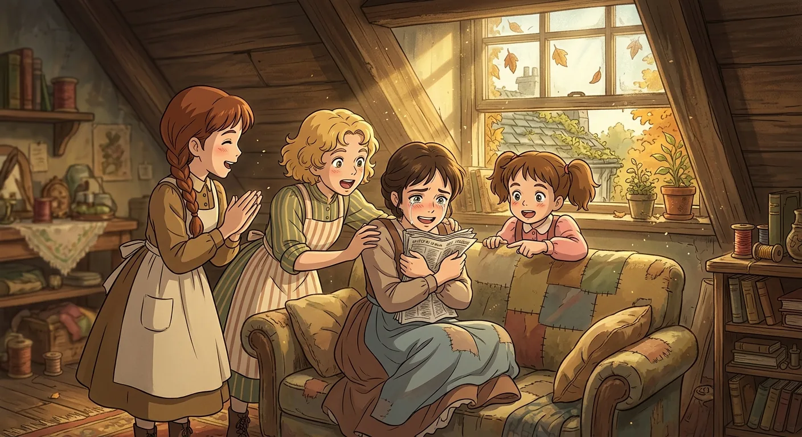
Secrets, Manuscripts, and Friendly Warnings
On a chilly October afternoon, with autumn sunlight slanting through the high garret window, Jo March sits absorbed in her literary labors, scribbling furiously upon the old sofa while her pet rat Scrabble and his whiskered son promenade the beams overhead. When at last she signs her name with a flourish and ties the manuscript with a smart red ribbon, her face wears that sober, wistful expression which betrays how earnestly she has worked. Tucking this paper alongside another hidden manuscript, Jo slips out by way of the back porch roof—a most unconventional exit—and catches an omnibus into town, looking decidedly merry and mysterious.
Her destination proves to be a certain busy street, where she proceeds to dive in and out of a doorway several times, her courage failing her at each attempt. This curious performance catches the eye of young Laurie, who lounges in a window opposite and assumes, upon spying a dentist's sign among the placards, that his friend has come to have teeth extracted. Gallantly positioning himself to assist her home should she need it, he is thoroughly mystified when Jo emerges red-faced but laughing, speaking of something that must "wait a week" to come out. The truth soon tumbles forth: Jo has left two stories with a newspaperman and awaits his verdict with mingled hope and dread.
But secrets, it seems, must be traded fairly. In exchange for Jo's confession, Laurie whispers his own plummy bit of news—he knows where Meg's missing glove has been all this time. The answer produces a most comical change in Jo's countenance, for the glove resides in Mr. Brooke's pocket, kept there with decidedly romantic intent. Jo is far from pleased; the very notion of someone coming to take Meg away fills her with fierce dismay. When Laurie suggests she might feel differently when her own turn comes, she declares she should like to see anyone try it.
To dispel her rumpled spirits, Laurie challenges her to race down the hill, and Jo cannot resist the smooth road sloping before her. She arrives at the bottom breathless and disheveled, scattering hairpins like autumn leaves, just in time to be discovered by Meg herself, looking most ladylike after making calls. The older sister's gentle reproof only sharpens Jo's wistfulness; she begs not to be made to grow up before her time, sensing already how swiftly things are changing.
The days that follow find Jo behaving so queerly that her sisters are quite bewildered—rushing to meet the postman, exchanging mysterious signs with Laurie, and speaking cryptically of "Spread Eagles." At last, on a triumphant Saturday, the mystery resolves itself in the happiest fashion. Affecting to read aloud a story called "The Rival Painters," Jo keeps the paper's name carefully hidden until the tale concludes. Then, with a funny mixture of solemnity and excitement, she reveals that the author is none other than herself—Miss Josephine March, in actual print.
The household erupts in joyful celebration: Meg marvels, Amy offers gracious artistic critiques, Beth skips and sings, Hannah exclaims in astonishment, and Mrs. March beams with pride. Though the newspaper pays nothing to beginners, Jo glows with the knowledge that this is but the first step toward independence—toward earning her own way and helping those she loves. Wrapping her head in the precious paper, she bedews her little story with happy tears, for the dearest wishes of her heart have begun, however modestly, to take wing.
Yet even amid such joy, the shadow of Laurie's other secret lingers—Mr. Brooke's romantic intentions toward Meg—and one senses that the changes Jo dreads may arrive sooner than any of them expect.
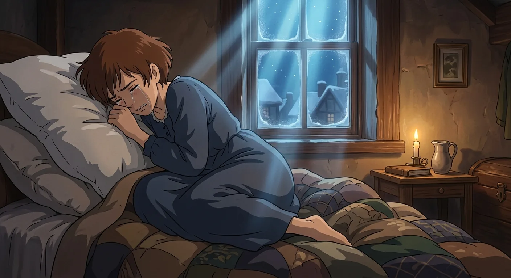
November's Dark Turn
The dreariness of November hung heavy upon the March household that dull afternoon, the frost-bitten garden beyond the windows seeming to mirror the restless spirits within. Meg stood gazing out at the blighted scene, declaring the month most disagreeable, while Jo pensively remarked—quite unaware of the ink blot adorning her nose—that her birth in such a month explained everything. Beth, ever the gentle optimist, suggested that something pleasant might transform their view entirely, but Meg would have none of it. She was out of sorts, weary of grubbing along without change or amusement, feeling as though their lives had become little more than a treadmill of monotony.
Jo, sympathetic to her sister's longing yet powerless to remedy it, wished aloud that she might arrange Meg's fate as easily as she managed her fictional heroines—perhaps a rich relation leaving an unexpected fortune, allowing Meg to dash about as an elegant heiress. But Meg replied bitterly that such things belonged only to stories, that in this unjust world men must work while women marry for money. Amy, spatting away at her clay models in the corner, cheerfully promised that she and Jo would make fortunes for them all within ten years, though Meg confessed she had little faith in ink or dirt.
Yet even as gloom settled upon the sisters, Beth's hopeful eyes discerned two pleasant things approaching—Marmee coming down the street and Laurie tramping through the garden with eager steps. Both arrived together, Mrs. March inquiring after a letter from Father as she always did, and Laurie inviting the girls for a drive to clear his mathematics-muddled head. Jo and Beth agreed at once, and Amy rushed off to wash her hands, though Meg demurred, having privately resolved with her mother not to drive too often with the young tutor's charge.
But before the outing could commence, a sharp ring interrupted them, and Hannah entered bearing a telegram—those horrid telegraph things, as she called it—handling the paper as though it might explode. At the sight of it, Mrs. March snatched it up, read its two brief lines, and dropped back into her chair, white as death. The message was stark and terrible: *Your husband is very ill. Come at once.* The room fell still, the day darkened strangely beyond the windows, and the whole world seemed to shift beneath their feet as the girls gathered around their stricken mother.
Within moments, however, Mrs. March mastered herself, stretching out her arms to her daughters and bidding them help her bear it. There followed a flurry of tears and broken comfort, until Hannah—wise in her plain way—set them all to work, declaring she would waste no time crying but get things ready directly. The household scattered like leaves before a gust of wind, each sister dispatched upon urgent errands. Laurie flew off with telegrams and notes, Mr. Laurence arrived offering every comfort and protection, and Mr. Brooke quietly presented himself as escort for the journey—a kindness that brought grateful tears to Meg's eyes and something more to her heart.
When at last Jo returned from her mysterious errand, she bore with her twenty-five dollars and a queer expression upon her face—and beneath her bonnet, where once her abundant chestnut hair had flowed, there remained only a short, rough crop. She had sold her one beauty to a barber, impulsively and completely, for her father's sake. The family exclaimed in astonishment and tender distress, but Jo brushed aside their concern with characteristic bravado, insisting her head felt deliciously light and that vanity had needed trimming anyway.
Yet that night, when the house had fallen silent and Meg lay sleepless with anxious thoughts, she heard a stifled sob from her sister's pillow. Jo, who never sniveled over trifles, was weeping quietly for her shorn locks—the vain part of her making a private moan for what was lost. And as the clocks struck midnight, Mrs. March moved softly from bed to bed, smoothing coverlets and pressing fervent kisses upon each sleeping face, until the moon broke through the clouds as if to whisper that light always waits behind the darkness—a comfort she would carry with her into the uncertain days ahead.
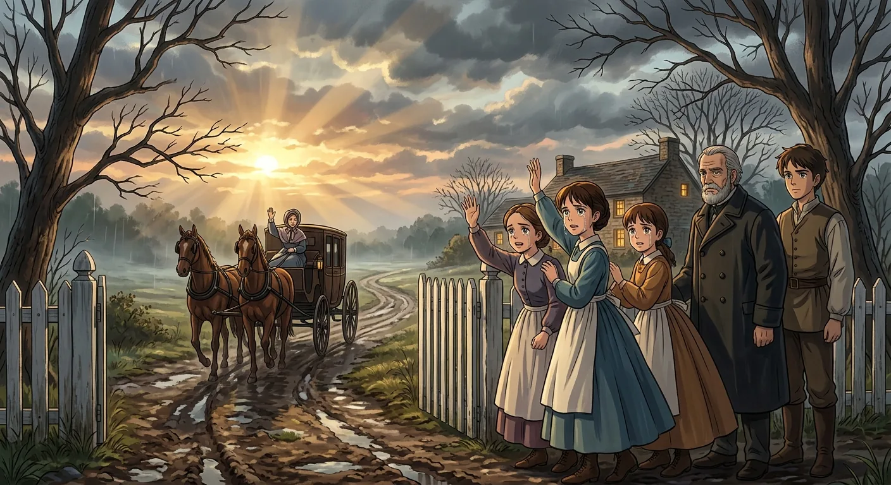
A Brave Farewell and Faithful Resolve
In the cold, gray dawn of the March household, the four sisters rose to face a morning unlike any they had known, lighting their lamp to read together from their little books with an earnestness born of real trouble rather than girlish sentiment. The telegram announcing Father's illness had shaken the very foundations of their cozy world, yet the girls held fast to a brave resolution: they would send their mother off to Washington with dry eyes and cheerful faces, however much their hearts might ache.
Everything that morning seemed strange and dreamlike—breakfast at an unaccustomed hour, Hannah flying about the kitchen still in her nightcap, the great trunk standing ready in the hall. Mrs. March sat pale and worn at the table, scarcely able to eat, while her daughters busied themselves about her with trembling hands, one folding her shawl, another smoothing her bonnet strings, all desperate to be useful. Before the carriage came, Marmee gathered them close and dispensed her parting counsel with quiet gravity: Meg must be prudent and watch over the others; Jo must curb her rashness and write faithfully; Beth must find solace in her music and her household duties; and little Amy must be obedient and helpful in her turn. "Hope and keep busy," their mother urged, "and whatever happens, remember that you never can be fatherless."
When the carriage rattled to the door, the girls stood their ground bravely. No one cried aloud or uttered lamentations, though their hearts were heavy with unspoken fears. Mrs. March kissed each dear face, climbed into the carriage beside the steady, sensible Mr. Brooke—whom the girls promptly christened "Mr. Greatheart"—and drove away just as the sun broke through the clouds. She carried with her the image of four bright faces at the gate, with old Mr. Laurence, faithful Hannah, and devoted Laurie standing behind them like a bodyguard.
Left to themselves, the sisters felt as though an earthquake had struck, as though half the house had vanished. Beth could not speak at all, but only pointed to the pile of neatly mended stockings their mother had left on the table—proof that even in her last hurried moments, Marmee had thought and worked for them. At this tender sight, all their brave resolutions crumbled, and they wept bitterly together until Hannah, wise and practical, rallied them with hot coffee and a reminder of their mother's words. Fortified, Jo marched off to Aunt March, Meg departed for the Kings despite her red eyes, and Beth and Amy settled into their home duties with renewed determination.
In the days that followed, cheerful bulletins from Mr. Brooke brought comfort, and each member of the household took up pen to send letters to Washington. Meg wrote with proper, scented elegance of how she was learning to head the table and keep the little family in order. Jo scrawled a characteristic note full of blots and exclamation points, confessing a quarrel with Laurie that she had mended by remembering Marmee's teaching, and enclosing a homemade poem about finding virtue in honest labor. Beth's brief, tender message came with pressed pansies from the plant she had kept safe for Father. Amy's letter was a charming muddle of malapropisms and complaints about starch in her aprons. Even Hannah contributed in her rough, affectionate way, and Laurie sent a playful military dispatch. Old Mr. Laurence added his own dignified reassurance.
Together, these letters painted a portrait of the March household carrying on with courage, humor, and love—a family keeping busy and hopeful, just as Marmee had asked, while awaiting her return and the good news that Father was, at last, beginning to mend.
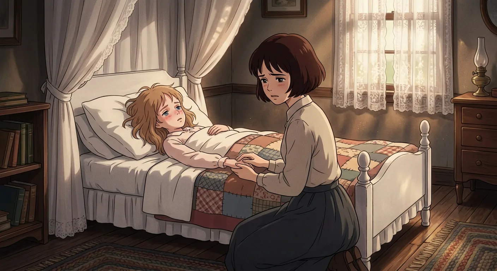
Beth's Quiet Devotion and Heavy Burden
For a brief, shining week following news of their father's improvement, the March household fairly overflowed with virtue—such an abundance of good intentions and self-denial that one might have bottled it up and distributed it throughout the neighborhood. Yet, as so often happens when the first flush of crisis has passed, the girls began to relax their praiseworthy efforts and slip quietly back into their old familiar ways. Jo, nursing a cold she had earned through careless neglect of her shorn head, settled contentedly upon the sofa with books and arsenicum, quite happy to be excused from reading aloud to Aunt March. Amy discovered that housework and artistic pursuits made poor bedfellows, and returned with relief to her mud pies. Meg divided her days between teaching and letter-writing, though precious little sewing seemed to get accomplished. The household clock, as it were, had lost its pendulum.
All the while, little Beth kept faithfully on. She performed not only her own small duties but many of her sisters' as well, for they were forgetful creatures, and someone had to wind the clock. When her heart grew heavy with longing for Mother or fears for Father, she would steal away to a certain closet, press her face into the folds of a dear old gown, and make her quiet little moan and prayer where no one could hear. What cheered her afterward, none could say, but everyone felt how sweet and helpful Beth was, and fell into the habit of going to her for comfort.
It was Beth, naturally, who remembered the Hummels—the poor family their mother had charged them not to forget. When she asked her sisters to visit, Meg was too tired, Jo's cold was well enough for gallivanting with Laurie but not for charity calls, and Amy was nowhere to be found. And so Beth, with her head aching and her patient eyes full of quiet grief, slipped out alone into the chilly air with a basket of odds and ends for the suffering family.
She returned late, and crept upstairs unseen. When Jo found her sitting on the medicine chest in Mother's room, clutching a camphor bottle with red-rimmed eyes, the dreadful truth came tumbling out: the Hummel baby had died in Beth's lap before the mother could return with the doctor. Worse still, the physician had diagnosed scarlet fever among the other children and sent Beth home with stern instructions to take belladonna at once.
Jo's heart seized with remorse and fear. She had let her little sister go alone, had stayed home scribbling rubbish while Beth walked straight into danger. Hannah, roused from her kitchen nap, took charge with brisk assurance—Dr. Bangs would be sent for, Amy must be dispatched to Aunt March's to keep her safe, and one sister would remain to nurse Beth. When asked which she preferred, Beth leaned her head against Jo with a contented look that settled the matter entirely.
Amy rebelled at the notion of exile to cross old Aunt March's domain, but Laurie, with his wheedlesome ways and promises of daily visits, theater outings, and drives behind Puck in the trotting wagon, coaxed her into reluctant submission. Dr. Bangs confirmed their fears—Beth showed symptoms of the fever, though he hoped she would have it lightly—and Amy was bundled off in great state, escorted by Jo and Laurie to face Aunt March's sharp tongue and Polly the parrot's ruder one.
Left behind in the suddenly quiet house, Jo and Meg faced the weight of their carelessness and the anxious question of whether to summon their mother home—a decision that would have to wait, for now, upon time and providence.
As Beth lay pale and feverish upon their mother's bed, the true test of the little household had only just begun.
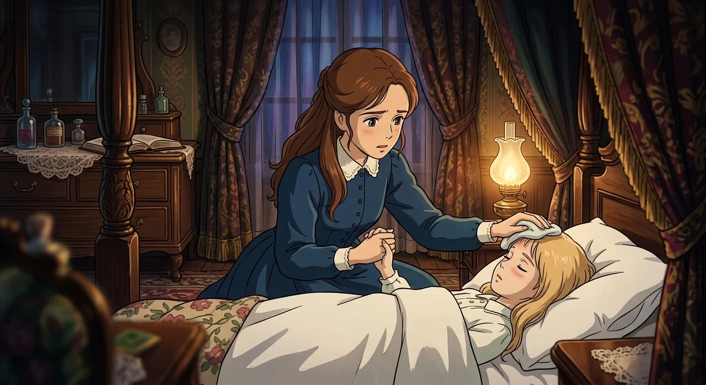
Beth's Fever and a Family's Vigil
The fever had indeed taken hold of Beth, and far more fiercely than anyone save Hannah and Dr. Bangs could know. The girls understood little of illness, and Mr. Laurence was forbidden from visiting, so the household fell under Hannah's capable but anxious management while the good doctor came and went, leaving much to the faithful nurse's judgment. Meg remained at home to avoid carrying contagion to the Kings, keeping house with a troubled conscience as she wrote letters that made no mention of her sister's worsening condition. She knew deception ill-suited her, yet Hannah would hear nothing of worrying Mrs. March over what she dismissed as "sech a trifle."
Jo gave herself wholly to Beth's care, a task made bearable by the patient sweetness with which her sister endured her suffering—until the fever rose and stole Beth's reason away. Then came the terrible hours when Beth played upon the coverlet as though it were her beloved piano, when she tried to sing through a throat too swollen for music, when she called for her mother in a voice that did not recognize the familiar faces hovering near. Jo grew frightened, Meg pleaded to write the truth, and even stubborn Hannah allowed she "would think of it." A letter from Washington only deepened their distress: Father had relapsed and could not possibly come home.
How dark those days became, how sad and silent the once-cheerful house, as the sisters worked and waited beneath the shadow that hung over them. Margaret, sitting alone with tears dropping upon her sewing, came to understand how rich she had been in blessings no money could purchase—love and protection, peace and health. Jo, keeping watch in the darkened sickroom, learned at last to see what she had too often overlooked: the quiet beauty of Beth's nature, the deep place she held in every heart, and the worth of her unselfish ambition to make home happy through simple virtues that required no genius, no fortune, no beauty—only a loving spirit. Even Amy, exiled at Aunt March's, longed to return and serve the sister whose willing hands had done so many neglected tasks for her. Laurie haunted the house like a restless ghost, while his grandfather locked the grand piano rather than be reminded of the girl who had once filled his twilight hours with music. The milkman and baker inquired after Beth; neighbors sent comforts and good wishes; and all were surprised to discover how many friends shy little Beth had quietly made.
When the first of December brought bitter wind and falling snow, Dr. Bangs delivered the dreaded words: Mrs. March must be sent for. Jo flew through the storm to dispatch the telegram, returning pale and shaken. In the hall, with Laurie kneeling to remove her wet boots, she confessed her despair—that Beth no longer knew them, that God seemed impossibly far away. Laurie took her hand and held on, offering no eloquent speech but only the warm grasp of friendship, which proved more comforting than any words could be.
Yet even as Jo wept, Laurie revealed the secret he had kept: he had already telegraphed Mrs. March the day before, and she was coming that very night. Jo flew at him with joyful abandon, laughing and trembling, while Laurie patted her back and stole a bashful kiss before she pushed him gently away. Hope returned to the little house like a breath of fresh air; Beth's bird began to chirp, and a rose bloomed on Amy's bush as if in answer to their prayers.
Through the long night the sisters kept vigil, whispering fervent promises to heaven, until at last—past midnight, past two o'clock—the fever turned. Beth lay sleeping naturally, her skin damp and cool, her breathing easy. The doctor confirmed what Hannah's joyful tears had already proclaimed: the little girl would pull through.
As dawn broke over a world transformed into glittering snow, Meg placed a half-opened rose beside her sister's pillow—and from below came the sound of bells, Hannah's cry, and Laurie's joyful whisper: "Girls, she's come! She's come!"
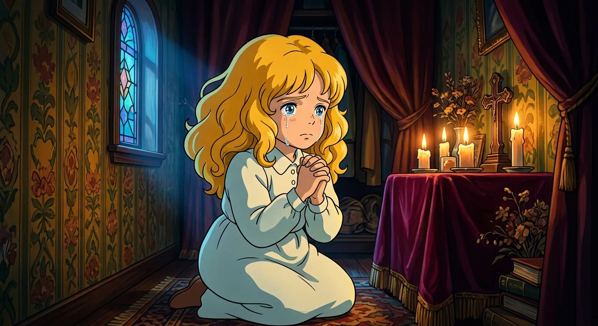
Exile, Duty, and Hidden Treasures
While Beth lay ill at home and the household turned its anxious attention toward her sickbed, Amy was learning the particular loneliness of exile at Aunt March's great house. For the first time in her young life, she understood just how tenderly she had been loved and petted within the safe walls of home—for Aunt March, though not unkind at heart, possessed none of that gift some fortunate elders have for keeping young in spirit. Instead, the old lady set about improving her niece with all the rigid methods of sixty years past, leaving Amy to feel rather like a fly caught in the web of a very strict spider.
Her days unfolded in tiresome routine: washing cups and polishing silver until they gleamed, dusting furniture with claw legs and endless carving that was never quite satisfactory, feeding the dreadful parrot Polly, combing the cross little lap dog Mop, and running up and down stairs on a dozen errands for the lame old lady. Lessons followed, then a precious hour of freedom—often spent with Laurie, who wheedled his way into Aunt March's good graces and carried Amy off for walks and rides. Afternoons meant reading aloud until Madame dozed, then sewing patchwork with outward meekness and inward rebellion, and evenings brought such unutterably dull stories of Aunt March's youth that Amy generally fell asleep before she could squeeze out more than a tear or two over her hard fate.
Her one true friend within those walls was Esther, the French maid who had served Madame for years and who took a fancy to the pretty, well-mannered girl. Esther allowed Amy to explore the house's treasures—the ancient chests and wardrobes stuffed with curious ornaments, and especially the Indian cabinet with its secret drawers and velvet-cushioned jewel cases. There Amy discovered garnets and pearls, diamonds and mourning rings, and a beautiful rosary of gold and ebony beads that Esther coveted for prayers rather than vanity. The kind Frenchwoman, seeing Amy's loneliness and longing for comfort, fitted up a little closet as a chapel where the child might sit alone to think good thoughts and pray for her sister's recovery.
When Esther let slip that the March sisters would one day inherit Aunt March's treasures—and that a certain turquoise ring might come to Amy sooner if she continued her charming behavior—the little girl resolved to be a perfect lamb. Yet her conscience, newly awakened by solitude and Esther's gentle piety, stirred her toward something nobler than ring-earning. Feeling that life was uncertain, she determined to make her will, distributing her modest treasures with careful generosity and adding a codicil leaving her precious curls to friends, though it would spoil her looks.
When Laurie came to witness the document, he inadvertently revealed that Beth had already spoken of giving away her few possessions. The gravity of his words pierced Amy's heart, and she could no longer keep back her tears. After he left, she retreated to her little chapel, and there in the twilight, with streaming eyes and aching heart, she prayed for Beth—understanding at last that a million turquoise rings could never console her for the loss of her gentle sister.
And so, while the small household at home held its breath over Beth's fever, Amy's childish heart was growing wiser in ways she had never expected, preparing her for whatever news might come across the miles.
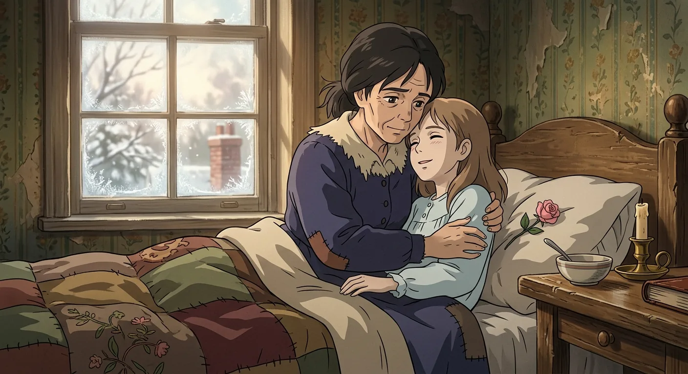
Mother's Return and Quiet Healing
The reunion of mother and daughters proved one of those sacred hours that live more fully in the heart than they ever can upon the page, and so the narrator wisely draws a veil over the tender particulars. Suffice it to say that genuine happiness flooded the little house, and Meg's whispered hope was answered at last—for when Beth stirred from her long, healing sleep, the first sights to greet her weary eyes were the little rose beside her pillow and Mother's dear face bending near. Too weak even to wonder, Beth only smiled and nestled into those loving arms, the hungry longing of her feverish days satisfied at last.
Hannah, unable to contain her jubilation in any quieter fashion, channeled her relief into an astonishing breakfast, while Meg and Jo fed their travel-worn mother like dutiful young storks and listened breathlessly to whispered news—Father's improving state, Mr. Brooke's faithful promise to remain at his bedside, the storm-delayed journey home, and the blessed comfort of Laurie's hopeful face awaiting her at the station. Outside, the world sparkled brilliant and gay beneath the season's first snow; within, a Sabbath stillness reigned as everyone slept, spent from long nights of watching. Mrs. March would not leave Beth's side, dozing in the big chair and waking often to touch her child like a miser brooding over recovered treasure.
Meanwhile, Laurie sped off to comfort Amy at Aunt March's, bearing news so skillfully told that even the stern old lady sniffed back a tear and, wonder of wonders, refrained from a single "I told you so." Amy rose magnificently to the occasion, restraining her impatience and sparing scarcely a thought for the turquoise ring—proof, perhaps, that the good thoughts nurtured in her little chapel had begun to bear fruit. The ring came anyway, pressed upon her finger by a softened Aunt March, who declared the girl a credit to her name. When Mrs. March arrived to collect her youngest, Amy poured out her trials and her resolutions in the quiet chapel, confessing her plan to wear the ring not from vanity but as a reminder to conquer selfishness—to become, as nearly as she could, like Beth, whom everyone loved.
Yet the day's emotions did not end with reunions and reform. That evening, Jo slipped into Beth's room with a worried look and confided a troubling secret: Mr. Brooke had kept one of Meg's gloves, and Laurie had revealed that the young tutor loved her sister, though he dared not speak while she was so young and he so poor. Jo's distress poured out in a torrent—visions of lovering about the house, of Meg absorbed and lost to sisterly confidence, of a dreadful hole torn in the family circle. Mrs. March listened patiently, then explained that both she and Father had heard Mr. Brooke's honorable declaration and respected his wish only to love Meg and work for her until he could offer a comfortable home. Still, they had resolved that Meg should not bind herself before twenty; time and patience would test the love.
Jo remained unconvinced—had she not planned for Meg to marry Teddy and live in ease forever?—but Marmee gently cautioned against meddling, reminding her that genuine happiness flourishes even in plain little houses where daily bread is earned. When Meg herself appeared with the letter for Father, Mrs. March's keen glance and tender kiss confirmed what she already suspected: Meg did not love John yet, but would soon learn to.
And so, with Beth safely past her crisis and new currents stirring beneath the surface of the household, the March family stood poised on the threshold of changes none of them could quite forestall.
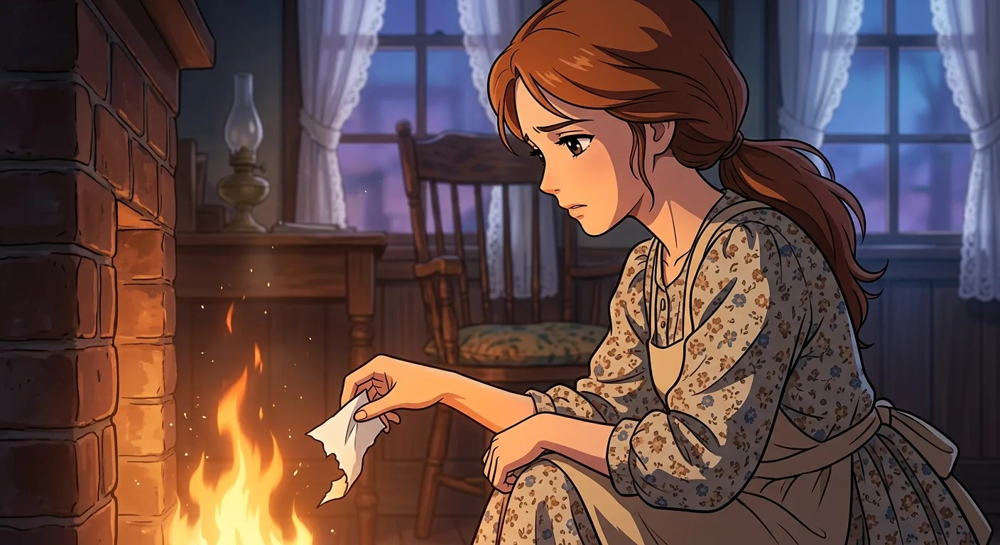
Laurie's Prank and Its Consequences
The day following whatever secret revelation Jo had received proved a trying one, for she wore her burden plainly on her face—looking mysterious and important in a way that decidedly aggravated Meg, who had long since learned that the surest method of extracting Jo's confidences was to feign indifference. Yet this time no confession came, and the household settled into an uneasy quiet. With Beth still recovering under their mother's watchful care and Amy dispatched elsewhere, Jo found herself thrown upon Laurie's company—a prospect that filled her with equal parts delight and dread, for she knew the mischief-loving boy would wheedle her secret from her by any means necessary.
And so he did. Through bribing, ridiculing, threatening, and every other device his quick mind could conjure, Laurie satisfied himself that the mystery concerned Meg and his tutor, Mr. Brooke. Feeling slighted that Brooke had not confided in him, the young gentleman determined upon retaliation. He penned a false love letter in Brooke's hand, declaring passionate devotion and imploring Meg to send word of hope through Laurie himself. Poor Meg, inexperienced in such matters and secretly pleased to feel like the heroines in her favorite novels, answered the letter with modest dignity—only to receive a bewildered reply from the real Mr. Brooke, who knew nothing of any love correspondence and expressed sorrow that "roguish sister Jo" had taken liberties with their names.
The revelation threw the March household into an uproar. Meg wept with mortification, Jo protested her innocence with vehement indignation, and Mrs. March—after extracting Meg's confession that she had written back promising only friendship until Father could be consulted—sent Jo to fetch the culprit. Laurie appeared with such a penitent face, offering such humble apologies and swearing wild horses could not drag the truth from him, that even Meg's wounded dignity softened. Yet Jo stood apart, primming her face into stern disapproval, and when Laurie departed without her forgiveness, she found herself lonelier than she had expected.
What followed required all Jo's talents as peacemaker. At the Laurence house she discovered that Laurie had quarreled with his grandfather, who had shaken him for refusing to explain the trouble—Laurie having kept his promise of silence. The boy had locked himself in his room, threatening to run away to Washington, while the old gentleman fumed below. Jo coaxed and reasoned with both pepper pots in turn, extracting from Mr. Laurence a formal written apology that appealed to Laurie's sense of humor and brought him down to a humble-pie dinner with his grandfather, who remained saintly in temper for the rest of the day.
The household believed the storm had passed, yet Laurie's prank had done its quiet work. Though others forgot the forged letters, Meg remembered. She never spoke of a certain person, but she thought of him often, dreaming dreams she would not confess—until Jo, rummaging through her sister's desk, discovered a scrap of paper bearing the words *Mrs. John Brooke*, and cast it into the fire with a tragic groan, certain that the mischief had hastened the very change she dreaded most.
Thus, as the family prepared for Father's long-awaited return, new currents stirred beneath the cheerful surface of the little house, currents that would carry them all toward whatever awaited in the chapters yet to come.
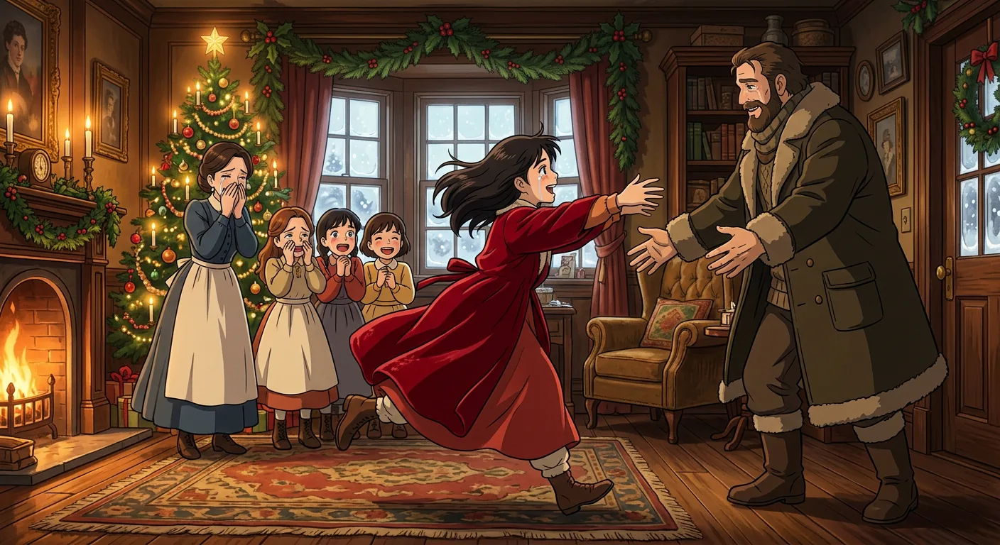
Recovery, Reunion, and Christmas Joy
Like sunshine breaking through after a long storm, peace settled over the March household in the weeks following Beth's recovery. The invalids—both Beth and Mr. March, still convalescing in Washington—improved so rapidly that Father wrote of returning early in the new year, news that set every heart to hoping. Beth, though still too weak to walk unaided, could manage the study sofa, where she occupied herself first with her beloved cats and then with doll's sewing that had fallen sadly behind during her illness. Jo appointed herself chief nurse and porter, carrying her frail sister about the house in strong, tender arms. Meg cheerfully sacrificed her white hands to cooking delicate dishes for "the dear," while Amy, that loyal slave of the turquoise ring, celebrated her sister's return to life by pressing treasures upon anyone who would accept them.
As Christmas drew near, the usual mysteries began to haunt the house, with Jo and Laurie hatching schemes so magnificently absurd—bonfires, skyrockets, triumphal arches—that the elders were forced to quench them repeatedly. The ambitious pair went about with exaggeratedly forlorn faces, though explosions of laughter betrayed them whenever they got together. Several days of unseasonably mild weather ushered in Christmas morning, and Hannah declared she "felt in her bones" it would be an unusually fine day—a prophecy that proved wonderfully true.
Father's letter promised his speedy return, Beth woke feeling uncommonly well, and Jo and Laurie unveiled their secret labor: a stately snow-maiden standing in the garden, crowned with holly, draped in a rainbow afghan, and bearing fruit, flowers, and a roll of music for their own dear "Queen Bess." A whimsical poem on pink paper issued from the Jungfrau's lips, and Beth laughed until tears came. Each sister received her heart's desire—Jo her long-coveted *Undine and Sintram*, Amy an engraved Madonna, Meg her first silk dress from Mr. Laurence—and Marmee clasped a brooch woven from four shades of beloved hair. Happiness brimmed so high that Beth sighed she could hold but one drop more.
And then that drop came. Laurie popped his head through the parlor door, face alight with suppressed excitement, announcing another Christmas present for the March family. Before anyone could draw breath, he vanished—and in his place stood a tall man muffled to the eyes, leaning on the arm of Mr. Brooke. A general stampede ensued: Jo nearly fainted and had to be revived in the china closet; Mr. Brooke kissed Meg entirely by mistake; Amy tumbled over a stool and hugged Father's boots without pausing to rise. Marmee held up a warning hand—"Remember Beth!"—but too late. The study door flew open, the little red wrapper appeared, and Beth ran straight into her father's arms on limbs strengthened by pure joy.
The Christmas dinner that followed was a triumph—fat turkey, plum pudding, jellies in which Amy reveled like a fly in a honeypot—and afterward the reunited family gathered round the fire. Father, observing his daughters with tender satisfaction, read the year's growth in small but telling signs: Meg's roughened, capable hands; Jo's gentler voice and motherly care of Beth; Amy's selfless errands and unmentioned ring. To each he spoke praise that warmed better than any blaze. When asked what she was thinking, Beth answered softly that she had read in *Pilgrim's Progress* of a pleasant green meadow where Christian and Hopeful rested among lilies before journeying on. Slipping to the piano, she sang the shepherd boy's hymn of humble contentment—her own music, made for Father—and the sweet voice they had feared silenced forever filled the room once more.
Yet even as the family savored this interval of peace, the currents of change ran beneath the surface—Mr. Brooke's devoted presence, Meg's blushes, and Jo's dark glowers hinting that new trials and transformations awaited the little pilgrims in the chapters yet to come.
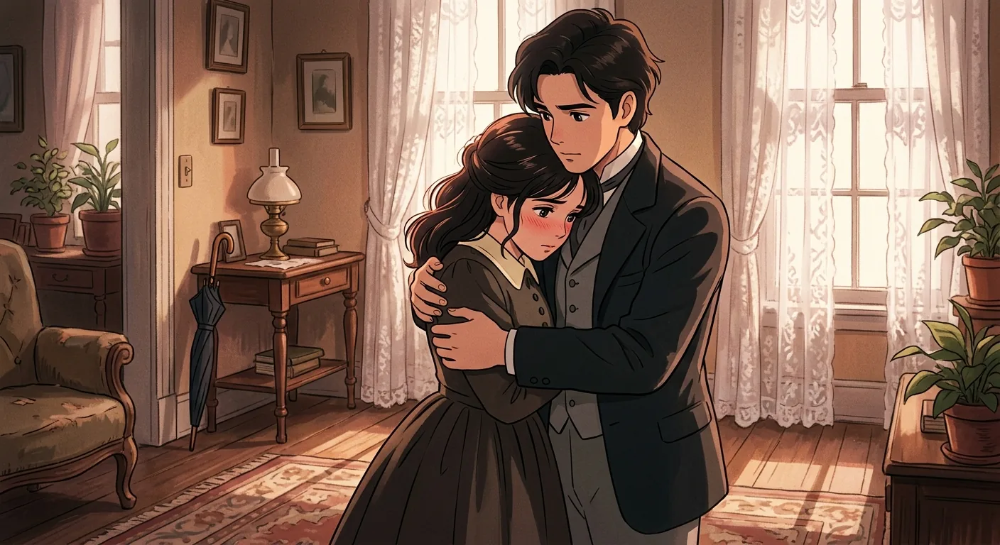
Meg's Romantic Resolve Tested
The March household, reunited at last with their beloved Father, buzzed with the happy industry of a family tending its recovering invalid. Yet even as they hovered about Mr. March like bees round their queen, an unspoken tension hummed beneath the surface contentment. The elder members exchanged anxious glances whenever their eyes followed Meg, who had grown curiously absent-minded—starting at every ring of the bell, coloring prettily whenever a certain gentleman's name crossed anyone's lips. Jo, never one to mask her feelings, was observed shaking her fist at Mr. Brooke's umbrella where it stood innocently in the hall, a silent enemy she could neither banish nor befriend.
When Laurie passed by that afternoon and caught sight of Meg at the window, he could not resist a theatrical display—falling to his knees in the snow, clutching his heart, wringing imaginary tears from his handkerchief—a pantomime of lovesick despair that made Meg laugh despite herself. Jo, however, found nothing amusing in the performance, and even less in her sister's poorly concealed pleasure at such romantic nonsense. Meg protested she cared little for Mr. Brooke and had already prepared a dignified speech to dismiss his attentions, but Jo remained skeptical. Before Meg could rehearse her stately exit, however, a modest tap at the door announced the very gentleman himself, come ostensibly for his umbrella but clearly hoping for something more.
Jo slipped away to give Meg her chance, yet the carefully prepared speech evaporated the moment Mr. Brooke took her hand and called her Margaret in that tender way of his. Poor Meg forgot every sensible word she had planned and found herself caught between the desire to flee and the longing to stay. When John confessed his love and asked only to know if she might care for him a little, Meg's resolve melted entirely—until his satisfied smile stirred something perverse within her. The love of power, which sleeps in even the gentlest heart, awakened suddenly, and Meg dismissed him with capricious coldness that left the poor young man bewildered and pale.
Into this delicate moment burst Aunt March, bristling with curiosity and sharp opinions. Upon discovering the nature of the interview, the old lady wasted no time in threatening Meg with disinheritance should she marry "this Cook"—for Aunt March possessed the perfect gift of rousing opposition in the mildest souls. Her imperious commands achieved precisely the opposite of their intent. Meg, who had been ready to send John away, now found herself defending him with passionate eloquence, declaring she would marry whom she pleased and cared nothing for money when love and honest work were to be had.
Aunt March departed in high dudgeon, slamming the door behind her, but she had unwittingly done John Brooke the greatest service imaginable. For he had heard every brave word from the study, and before Meg could collect herself, he emerged to thank her for defending him—and to claim the victory her own heart had already granted. This time there was no crushing speech, no dignified exit. There was only Meg whispering "Yes, John" and hiding her blushing face against his waistcoat.
Jo, expecting to find her strong-minded sister triumphant over a banished suitor, discovered instead a scene that stole her breath entirely—Meg enthroned upon her lover's knee, looking perfectly content. The household erupted in happy chaos as the news spread: Mr. and Mrs. March beamed with tender approval, Amy began planning sketches of the lovers, and Beth smiled from her sofa. Only Jo retreated to the garret to mourn the loss of her dearest companion to this stranger called matrimony.
Yet even Jo's grief softened as the family gathered that evening, the old room brightening with the glow of first romance. Laurie promised to stand by her always, and as Jo's eyes traveled slowly around that beloved circle—Father and Mother reliving their own love story, the engaged couple lost in dreams, Beth peaceful with old Mr. Laurence, and Laurie smiling at her in the glass—she could not wish the picture much improved. So the curtain falls upon the four sisters, their futures trembling with possibility, awaiting only the world's invitation to raise it once more.
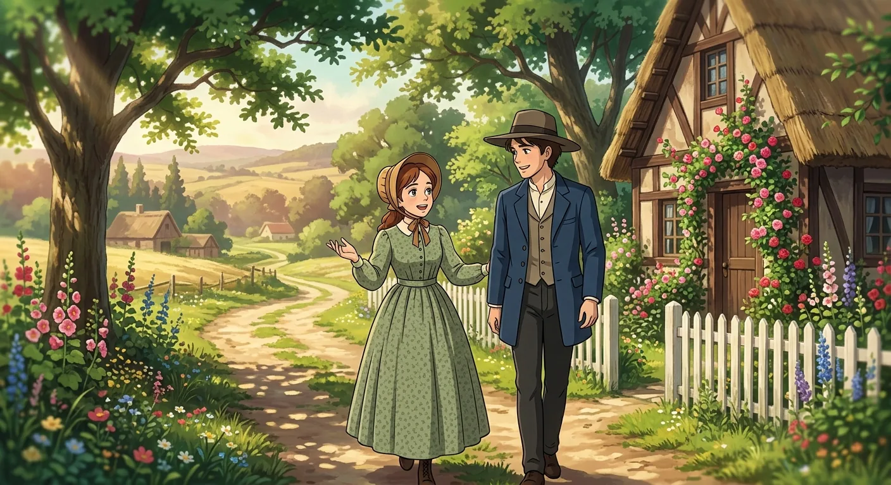
Peacetime and Preparations for New Beginnings
Before we step across the threshold into Meg's wedding day, let us pause and gather up the threads of three years' worth of quiet changes in the March household—for time, dear readers, has been at its gentle work, and there is much to tell.
The war has ended at last, and Mr. March sits safely among his books once more, tending to a small parish that recognizes in him what his family has always known: a man whose wisdom runs deeper than learning, whose charity embraces all mankind as brothers. Though worldly success has passed him by—for strict integrity seldom fills one's pockets—he has drawn to himself a congregation of earnest young men, troubled women, and even sinners seeking solace, all finding in the gray-headed scholar a heart as young and hopeful as their own. The five energetic women may rule the household in practical matters, but Father March remains its quiet anchor, the conscience to whom they turn in troublous times.
Mrs. March bustles about, grayer but no less brisk, her motherly attention consumed entirely by wedding preparations—so much so that the hospitals and widows who once depended on her visits must make do without their missionary for a spell.
And what of John Brooke? He did his duty manfully in the war, earned a wound but no stars or bars, and returned home to prepare an honest living for his bride. With the sturdy independence that so defines his character, he refused Mr. Laurence's generous offers and took a bookkeeper's position instead, preferring to build their future on wages fairly earned. Meg, meanwhile, has grown womanly and wise in housewifely arts, prettier than ever—for love is a great beautifier. She sometimes casts a wistful glance at Sallie Moffat's fine house and carriage, but such envious thoughts vanish like morning mist when she sits with John in the twilight, planning their small, sweet life together.
Jo never did return to Aunt March's service, for the old lady took such a fancy to Amy that she lured her with drawing lessons from the finest teacher available. So Amy gives her mornings to duty and her afternoons to pleasure, blossoming into quite the belle among Laurie's college friends. Jo has devoted herself to literature and to Beth—dear Beth, who never quite recovered her rosy health after the fever, though she remains hopeful, serene, and busy with quiet duties, an angel in the house before anyone thought to call her so. Jo earns her dollar a column from *The Spread Eagle* and dreams of greater fame, her manuscripts slowly multiplying in the old tin kitchen.
Laurie, having gone to college to please his grandfather, navigates it in the easiest manner possible to please himself. Money, manners, talent, and the kindest heart keep him a universal favorite, though his pranks bring him perilously close to expulsion more than once. He delights in thrilling the girls with tales of his narrow escapes and brings home absurd household gadgets for Meg—nutmeg graters that crumble, sweepers that leave dirt behind, and a watchman's rattle "in case of fire or thieves"—reducing everyone to helpless laughter.
The little brown house called Dovecote stands ready at last, its tiny rooms furnished with good sense and loving hands. Aunt March, bound by her vow never to give "that Brooke" a cent, cleverly circumvented her own decree by ordering Mrs. Carrol to supply a generous store of linens—a secret that leaked out to the family's great amusement.
As Jo and Laurie stroll away from the Dovecote together, she lectures him on his spending and his hideous short haircut, while he teases her about crying at weddings and warns that she'll be next to marry. Jo bristles at the very notion, declaring herself too busy for such nonsense—but Laurie's parting prophecy lingers in the air like a half-spoken promise, even as the household turns its eyes toward tomorrow, when Meg will leave girlhood behind forever.
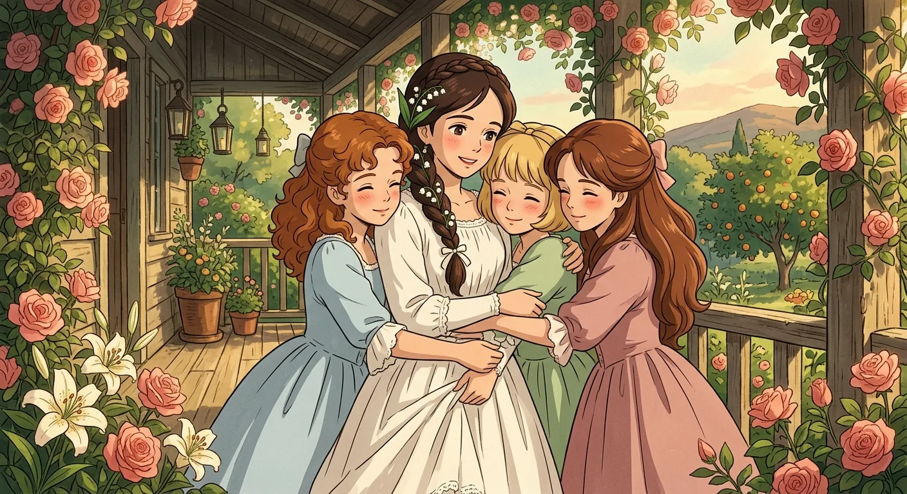
Roses, Love, and New Beginnings
On a bright June morning, with roses blooming in cheerful profusion about the porch as if the very garden wished to honor its gentle mistress, Meg March became Mrs. John Brooke in the simplest and sweetest of ceremonies. True to her nature, Meg would have nothing fashionable about the affair—no silk, no lace, no orange blossoms—only her own handiwork and the lilies of the valley that her John loved best tucked into the hair her sisters had braided with loving hands. When Amy declared her looking perfectly like herself, only lovelier, Meg opened her arms wide and invited all the crumples their embraces might leave upon her gown, proving that the new love waiting at the altar had not diminished the old love binding her to her family.
While Meg slipped away to tie John's cravat and steal quiet moments with Father in his study—keenly aware of the secret sorrow hidden behind Marmee's brave smiles—the younger sisters completed their toilets, and here we may pause to observe how three years have changed them. Jo has softened considerably, her angles smoothed, her cropped curls grown into a becoming coil, and only gentle words falling from that once-sharp tongue. Beth, ever more slender and pale, carries in her beautiful eyes a shadow of pain, though she speaks hopefully of being better soon. And Amy, now sixteen, has blossomed into that indescribable thing called grace—her nose still refusing to turn Grecian, her mouth still too wide, yet possessing a charm that draws the eye as surely as beauty itself.
When Aunt March arrived, she was properly scandalized to find the bride running about welcoming guests and the groom hammering up a fallen garland—highly improper, she declared, though even her sharp old eyes grew suspiciously damp when John stole a kiss behind the folding door. A crash heralded Jo's unfortunate collision with the cake (Laurie's delighted cry of "Jupiter Ammon!" echoing through the hall), yet Hannah soon assured everyone the confection survived intact.
The ceremony itself was beautifully simple, the family gathering close beneath a green arch as if loath to let Meg go. Father's voice trembled; John's hand shook; but Meg looked straight into her husband's eyes and spoke her vows with such tender trust that Aunt March sniffed audibly, and even Jo barely held back her tears—saved only by Laurie's mischievous gaze daring her to weep.
At the luncheon that followed, Meg extracted from Laurie a promise never to offer wine to young men, a pledge he gave heartily and kept faithfully ever after. Then Laurie, seizing upon inspiration, called for a German wedding dance, and even Aunt March tucked her cane under her arm to hop briskly about the bridal pair while young folks fluttered through the garden like midsummer butterflies.
As guests departed, Meg changed into her dove-colored traveling suit and, with full eyes, assured Marmee that marriage would never diminish her love for home. And so, with flowers in her hands and June sunshine brightening her happy face, she walked the quiet distance to her new little house on her husband's arm—embarking upon married life even as her sisters prepared to face the changes her absence would bring.
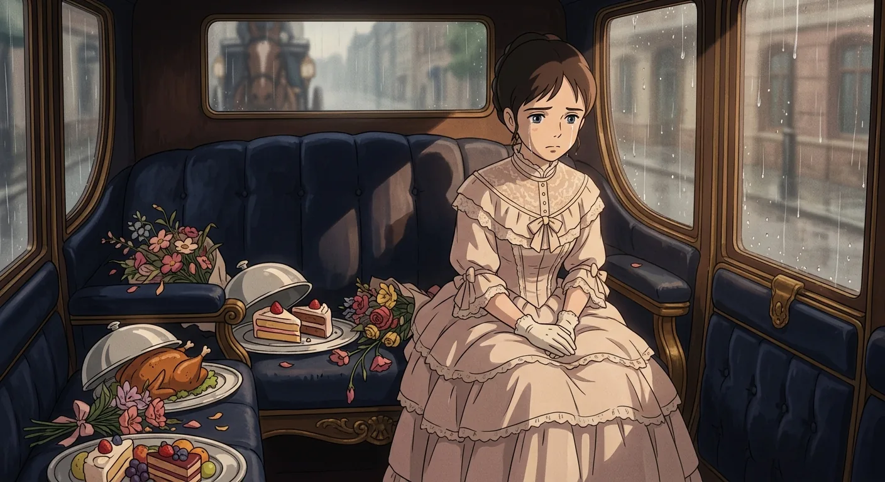
Ambition, Talent, and Youthful Experiments
Young readers may observe that the distance between believing oneself an artist and truly becoming one is vast indeed, and Amy March was learning this distinction through much tribulation. Mistaking enthusiasm for inspiration, she threw herself into every branch of art with the audacity only the young possess—progressing from delicate pen-and-ink drawings (which did prove both pleasant and profitable) to poker-sketching, during which the household lived in constant fear of conflagration. Poor Hannah dared not sleep without a pail of water at her bedside, while red-hot pokers lay about promiscuously and Raphael's face appeared boldly executed on the underside of the moulding board.
From fire to oil was a natural transition for burned fingers, and Amy's pastoral and marine views—such as were never seen on land or sea—would have produced seasickness in any nautical observer, had the utter disregard for shipbuilding not first convulsed him with laughter. Charcoal portraits followed, leaving the entire family looking wild and crocky as if just evoked from a coalbin, and ghostly plaster casts haunted every corner until an untoward accident brought this phase to an abrupt close. The young enthusiast, having cast her own pretty foot, found herself hopping wildly about the shed with that appendage trapped in hardened plaster—and Jo, so overcome with laughter during the excavation, left a lasting memorial of one artistic attempt, at least.
Yet if genius is eternal patience, as Michelangelo affirms, Amy had some claim to it, for she persevered while also cultivating herself as an attractive and accomplished woman. She was one of those happily created beings who please without effort, possessing that instinctive tact which always said the right thing to the right person. Her weakness lay in desiring to move in "our best society" without being quite sure what the best really was—though she was at heart a genuine lady, she had yet to learn that money cannot buy refinement of nature.
When Amy proposed an elegant artistic fête for her drawing class—complete with cold tongue, French chocolate, and ice cream—Mrs. March gently suggested that simpler plans might prove pleasanter, but knowing experience to be an excellent teacher, she wisely let her daughter proceed. Jo frowned upon the whole project, accusing Amy of truckling to fashionable girls, but Amy's sharp retort about Jo's "elbows out and nose in the air" independence proved such a good hit that both sisters burst out laughing, and Jo reluctantly agreed to sacrifice a day to Mrs. Grundy.
What followed was a comedy of domestic disasters: Hannah's cooking proved obstinate, expenses mounted alarmingly, the weather refused to cooperate, and the kittens devoured the chicken. Amy's mortifying encounter with one of Laurie's elegant friends—when a scarlet lobster tumbled from her basket in the omnibus—tested even her considerable tact. And when the grand day finally arrived, only one guest appeared, leaving poor Amy rattling about in the borrowed carriage like a kernel in a very big nutshell.
Yet Amy bore her disappointment with quiet dignity, asking only that no one mention the affair for a month, and finding comfort in having done her best even if fate had thwarted her. The family heroically consumed leftover salad in sympathetic silence—though months later, the mere word "fête" still produced a general smile, and Laurie's birthday gift of a tiny coral lobster charm ensured Amy would not soon forget this particular lesson in humility.
With her artistic ambitions thus tempered and her social pretensions gently checked, Amy was perhaps better prepared for the larger world that awaited her—one that would soon offer opportunities far beyond the scope of drawing classes and neighborhood luncheons.
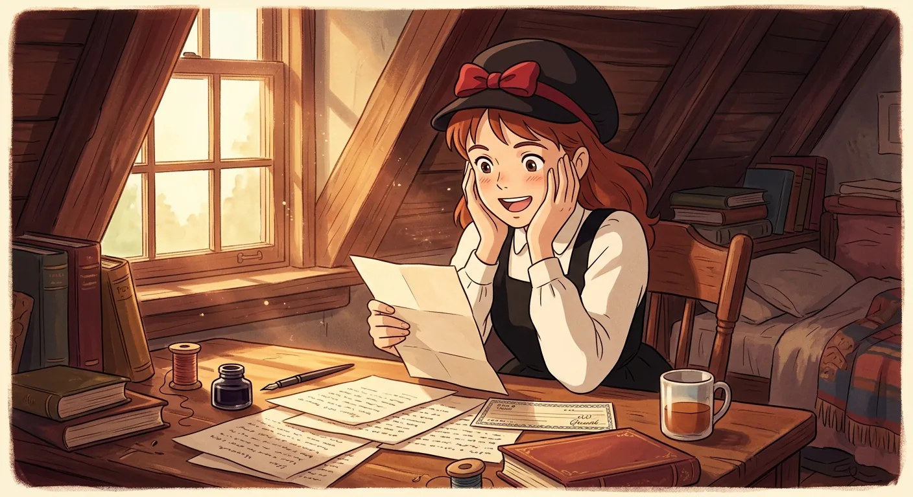
Jo's Sensational Literary Ambitions Ignite
Fortune, that capricious friend to struggling artists, chose to smile upon Jo March in a manner both modest and magnificent—for sometimes a hundred dollars can purchase more genuine happiness than half a million ever could.
Jo had long established her peculiar writing rituals, retreating to her room in what she called her "scribbling suit"—a black woolen pinafore suited for wiping pens and a matching cap adorned with a cheerful red bow. This cap served as a beacon to her family, its position upon her brow telegraphing the state of her creative labors as clearly as any semaphore. Drawn low meant hard work; pushed rakishly askew signaled exciting moments; cast upon the floor indicated despair so profound that even the bravest sister dared not knock. During these periods of divine afflatus, Jo inhabited an imaginary world as real and dear to her as any flesh-and-blood companion, forgetting meals and sleep alike until she emerged, hungry and cross, from her vortex.
It was while recovering from one such spell that Jo accompanied the tiresome Miss Crocker to a lecture on the Pyramids—an unlikely setting for inspiration, yet Providence works in mysterious ways. While waiting for the proceedings to begin, Jo's attention wandered to a studious lad beside her, absorbed in a pictorial newspaper featuring the most melodramatic illustration imaginable: an Indian tumbling over a precipice with a wolf at his throat, infuriated gentlemen with improbably small feet stabbing one another, and a disheveled female fleeing with mouth agape. The boy shared his paper, and Jo found herself reading the sensational tale within, authored by one Mrs. S.L.A.N.G. Northbury, who apparently earned a handsome living from such literary confections.
Here was Jo's new idea, planted and already taking root. Before Professor Sands had finished prosing about hieroglyphics, she had copied down the paper's address and resolved to compete for their hundred-dollar prize. She told no one at home, but set to work crafting a story brimming with desperation, despair, and an earthquake finale set in Lisbon—elements she considered appropriately striking for the sensational market.
Six weeks of secret waiting followed, until a letter arrived containing both a check for one hundred dollars and words of encouragement that Jo valued even more than the money. The family jubilee that followed was predictably enthusiastic, though her father's gentle admonition—"You can do better than this, Jo. Aim at the highest, and never mind the money"—planted a seed of its own. But Jo's immediate concern was practical: the prize money sent Beth and Marmee to the seaside, and her subsequent sensational tales kept the household in groceries and gowns. *The Duke's Daughter* paid the butcher; *A Phantom Hand* purchased carpets; and *The Curse of the Coventrys* proved a blessing indeed.
Yet Jo's greater ambition—her novel—awaited its fate. After four copyings, countless readings to confidential friends, and three publishers' rejections, she finally received an offer: cut the manuscript by one third and remove her favorite passages. The family council that followed offered contradictory advice in loving abundance, but it was Beth's quiet words—her wistful wish to see it printed *soon*, with an unconscious emphasis that chilled Jo's heart—that decided the matter.
With Spartan firmness, Jo chopped her first-born manuscript ruthlessly, following everyone's advice and thereby pleasing no one. The published book earned three hundred dollars and a bewildering array of criticism so contradictory that Jo hardly knew whether she had written something promising or broken all ten commandments. Yet from this buffeting she emerged wiser and stronger, able to laugh at her poor little book while still believing in it, ready to rise and try again—for the literary lessons of this chapter were only the beginning of her education as a writer.
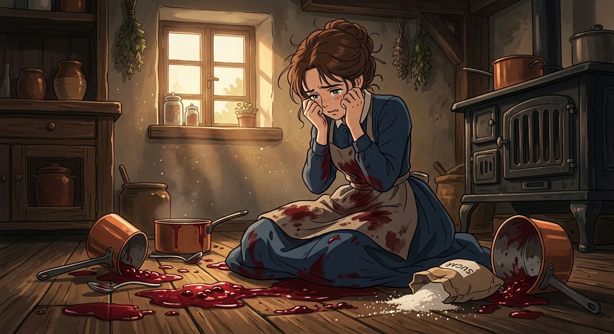
Meg's First Lessons in Housekeeping
So began the great adventure of housekeeping for young Mrs. Brooke, who threw herself into married life with all the fervent determination of a woman resolved that her husband should find their modest Dovecote nothing short of paradise. John should have smiling greetings, sumptuous dinners, and never want for a properly secured button—or so Meg vowed with the earnest hopefulness of a bride who has not yet discovered that buttons seem to possess a mysterious will of their own. She brought such love and energy to her labors that success was assured, though not without its trials, for in her eagerness to please she bustled and fretted like Martha herself, sometimes too weary even to smile, while poor John grew dyspeptic on dainty dishes and found himself ungratefully longing for plain fare.
Yet they were happy, these two, even after discovering that love alone cannot fill a larder. Their little house ceased to be a glorified bower and became, instead, something better—a home. The great cooking mania produced both triumphs that summoned family to feast and failures quietly dispatched to the convenient stomachs of the little Hummels. But it was the jelly that proved Meg's undoing. Armed with four dozen little pots, half a barrel of sugar, and unshakeable confidence in her abilities, she set to work on a hot summer's day, only to find that the wretched stuff refused to jell no matter how she boiled, strained, and implored it to behave.
And it was precisely then—as Meg sat weeping in her topsy-turvy kitchen, the floor baptized with failed preserves—that John arrived home with a guest for dinner. What followed was their first proper quarrel: sharp words exchanged, pride wounded on both sides, and a young husband and wife each resolving to be "calm and kind, but firm" while showing the other where duty had been neglected. They sat at opposite windows, wrapped in dignified silence, until Meg remembered her mother's counsel about being first to ask forgiveness. She crossed the room, swallowed her pride, and kissed John's forehead—and of course that settled everything. The penitent kiss proved sweeter than any words, and they declared afterward that it was the finest jelly they ever made, for family peace had been preserved in that little jar.
Autumn brought fresh trials when Sallie Moffat's friendship tempted Meg into gadding and gossiping—and worse, into spending. A violet silk, purchased in a moment of weakness for fifty dollars, hung in her conscience like a ghost. When John discovered the accounts, Meg's careless words—"I'm tired of being poor"—wounded him more deeply than she knew. The sight of him canceling his new greatcoat to cover her extravagance broke her heart entirely. They talked long into the night, and Meg learned to love her husband better for his poverty, which had made him strong and patient and tender.
But the year's deepest experience came at midsummer, when Laurie burst into the Dovecote to find not one baby but two—twins, a boy and a girl, whom he promptly christened Demi and Daisy. And so the little family grew, carrying its hard-won lessons of patience and forgiveness into whatever joys and trials the coming seasons might bring.
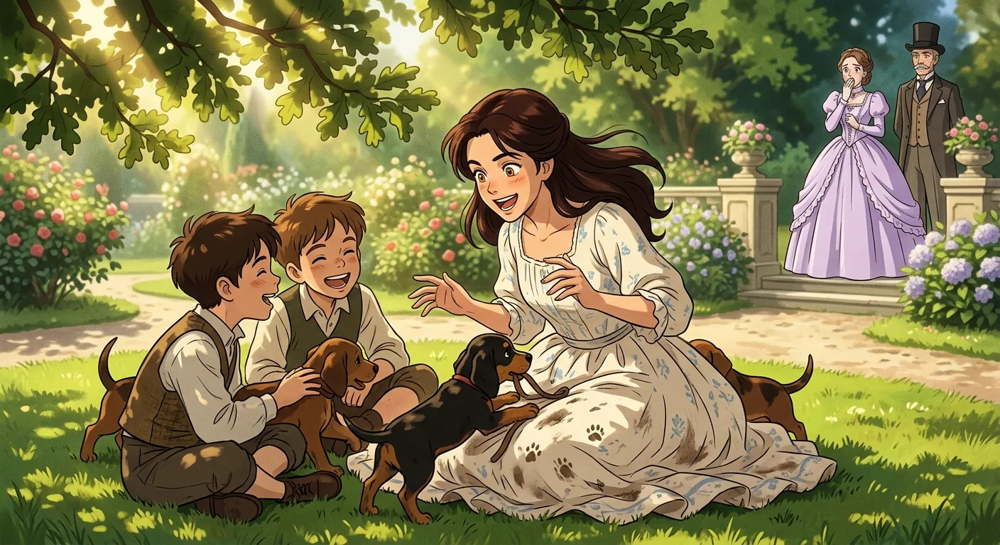
Jo's Reluctant Social Debut
The summer morning found Jo March quite comfortably absorbed in her dressmaking—for she served as mantua-maker general to the family and took no small pride in wielding a needle as deftly as a pen—when Amy swept in to collect on a bargain struck between them. In exchange for Amy's finishing a crayon portrait of Beth, Jo had promised to accompany her sister on a round of formal calls, a social duty Jo regarded with all the enthusiasm one might reserve for a dental extraction. She protested vigorously, citing threatening clouds and invoking Shylock with theatrical flair, but Amy would not be moved. A promise was a promise, and the debt they owed society must be paid.
What followed was a comedy of errors that would have been amusing had Amy not been so mortified by it. At the Chesters', Jo took Amy's instructions for calm, cool, quiet behavior so literally that she sat like a marble statue, answering every conversational offering with nothing but demure monosyllables and arctic smiles. The ladies pronounced her haughty and uninteresting before the door had properly closed behind them. At the Lambs', Jo swung wildly in the opposite direction, kissing the young ladies with theatrical effusion and regaling the gentlemen with tales of Amy's exploits—how she had rowed a saddle across a river to try an unbroken horse, how she painted her worn boots sky-blue for parties, how the sisters tinted their own hats because they couldn't afford new ones. Each revelation, meant in good humor, only deepened Amy's crimson mortification. When a compliment about Jo's published story prompted her to dismiss her own work as rubbish that only ordinary people enjoyed, the visit collapsed entirely.
Only at the Tudors' did Jo find any comfort, abandoning all pretense of elegance to sit on the grass surrounded by boys and dogs, her fine dress serving as a cushion for muddy paws while she told stories of Laurie's pranks. Amy, meanwhile, enjoyed a pleasant conversation with Mr. Tudor, whose family connection to British nobility—however distant—she found thoroughly gratifying. The contrast between the sisters sharpened as they walked away: Jo, rumpled and content; Amy, spotless and exasperated.
Their philosophical differences emerged in earnest as they debated whether girls ought to show disapproval of disagreeable young men through their manners, and whether reformers served any useful purpose in the world. Jo declared herself proudly among the new set, willing to weather brickbats and hooting for her principles; Amy counseled accommodation to the way of the world.
At Aunt March's house, the consequences of Jo's perverse mood proved more costly than she could know. While Amy sat beside Aunt Carrol with confiding grace, speaking gratefully of helping at the Chesters' charity fair and displaying her French, Jo rocked apart with a morose expression, declaring her hatred of patronage and favors that made her feel like a slave. Meaningful glances passed between the aunts. When the girls departed—Jo shaking hands in her gentlemanly way, Amy kissing both ladies warmly—Aunt March spoke decisively to her sister: "You'd better do it, Mary. I'll supply the money." And Aunt Carrol replied with equal conviction: "I certainly will, if her father and mother consent."
Jo, blissfully unaware that her contrary temper had just cost her a great happiness, walked home feeling only that calls had their usual bad effect upon her constitution—never guessing what that whispered conversation between the aunts would soon mean for Amy's future.
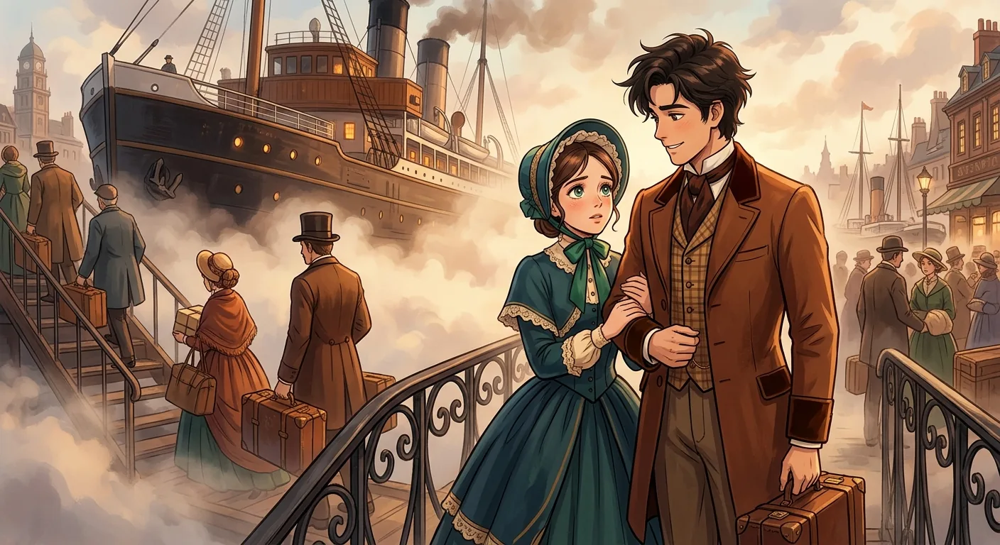
Amy's Fall and Rise at the Fair
The elegant charity fair organized by Mrs. Chester sets into motion a chain of events that tests Amy March's character most severely, while revealing the consequences—both bitter and sweet—that flow from the sisters' contrasting temperaments.
When Amy receives the coveted invitation to manage the art table, she throws herself into preparations with characteristic taste and industry, creating dainty illuminations and painted shells that would do any young artist proud. Jo, meanwhile, is pointedly excluded from the select gathering—a blessing in disguise, perhaps, for her elbows remain decidedly akimbo during this period of her life. Yet it is Jo's mischief that brings trouble upon her innocent sister, for her wicked imitation of May Chester at the Lambs' party has not gone undetected, and the gossip has found its way to wounded ears.
On the very eve of the fair, Mrs. Chester delivers the blow with as much grace as her conscience will allow: Amy must surrender her carefully arranged table to the Chester girls and content herself with the neglected flower table instead. The injustice of it stings deeply, yet Amy masters her temper with a dignity that surprises even herself, sweeping up her precious contributions and withdrawing without the angry speeches her heart would dearly love to deliver. At home, her family rallies around her—Marmee affirming her forbearance, Beth declaring she shan't attend at all, and Jo demanding vengeance in her forthright way—but Amy holds fast to her resolve that meanness in others is no excuse for meanness in oneself.
The fair proves a trial indeed. Her evergreen arch wobbles precariously, her best tile acquires a sepia tear upon Cupid's cheek, and summer customers show little interest in wilting bouquets. Yet when Amy's conscience preaches her a quiet sermon from her own illuminated text—*Thou shalt love thy neighbor as thyself*—she heeds it, returning her pretty things to May's table without being asked and refusing to let resentment poison her spirit.
That evening, the tables turn in more ways than one. Jo conspires with Laurie and his college friends to make Amy's corner the liveliest spot in the hall, while Hayes sends up a wilderness of flowers to fill the empty baskets. Even May Chester, softened by Amy's generosity, ensures that her rival's illuminations sell handsomely and bids her goodnight with a kiss of genuine reconciliation.
But the greatest consequence arrives a week later in the form of Aunt Carrol's letter: Amy, not Jo, is invited to travel abroad. Jo's bitter disappointment cuts deep—her blunt manners and too-independent spirit have cost her the opportunity she craved—yet she resolves to take a leaf from Amy's book and bear it cheerfully. Beth clings to her with quiet comfort, grateful that her dearest companion will remain at home a little longer, while Amy receives the news with solemn rapture, already sorting her colors and dreaming of Rome.
As the steamer carries Amy toward the Old World, she clings to Laurie at the gangway, extracting his promise to watch over those she loves, little suspecting how soon that vow might be tested by fortune's hand.
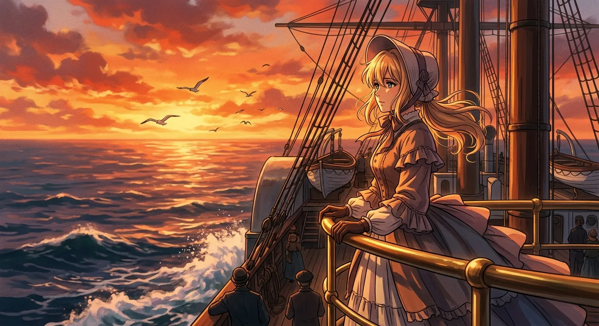
Across the Sea to England
Traveling across the Atlantic and landing at last upon English soil, Amy March finds herself breathless with delight, and she writes home to tell the family every delicious detail her busy pen can manage. The voyage proved pleasant indeed—Uncle and Aunt's illness left her free to take deck walks, watch sunsets blazing over rolling waves, and make agreeable acquaintance with gentlemen officers who, as she archly remarks, require useful occupation lest they smoke themselves to death. She wishes dear Beth could have felt the sea air, and imagines Jo scrambling up the rigging in a state of rapture, befriending the engineers along the way.
Ireland greets her with green hills, rosy skies, and picturesque ruins, and at Queenstown a new friend, Mr. Lennox, departs with a gallant little Irish verse comparing Amy's glance to the fatal beauty of Kate Kearney—nonsensical flattery she repeats with no small satisfaction. Liverpool she dismisses as noisy and dirty; Uncle amuses everyone by outfitting himself with dogskin gloves and an umbrella, certain he looks every inch a Briton until a bootblack smirks at his unmistakable Yankee shoes. The English countryside slides past the train windows like a gallery of paintings—thatched farmhouses, contented cattle, clover so green and grain so golden that Amy and Flo bounce from seat to seat crying out over every landmark, while Uncle calmly corrects their romantic mistakes: a gray ruin proves a brewery, gallows become a colliery, lambs turn out to be geese. London arrives in fog and rain, but shopping on Regent Street provides consolation in the form of a white hat, blue feather, and the loveliest mantle imaginable. A reckless hansom-cab adventure sends the two girls rattling helplessly through the streets, and Hyde Park affords them comic sketches of powdered coachmen and stiff riders on Rotten Row. When Fred and Frank Vaughn appear—Laurie's English friends grown tall and whiskered—the little party gains attentive escorts for theaters and excursions; Fred claims her attention, Frank tends to Flo, and Camp Laurence feels like a memory from another age.
Paris follows in a whirl of sight-seeing, shopping, and café lunches. Amy revels in the Louvre, gathering culture as fast as she can, while Fred Vaughn—who has mysteriously turned up on holiday—proves an indispensable translator and altogether the most agreeable young man she knows. By moonlight on the Rhine and beneath the ruined walls of Heidelberg Castle, she begins to sense that Fred's attentions amount to something more than traveling friendship. When a sudden letter summons him home to ailing Frank, he presses her hand and asks her not to forget him; she does not promise, but her answering look satisfies him. Writing confidentially to Marmee, she confesses what the family may call mercenary: if Fred proposes upon their reunion in Rome, she means to accept. She does not love him passionately, yet she likes him well enough, and the prospect of comfort, respectability, and an English estate tempts her far more than poverty ever could—one of the March girls, she reasons, ought to marry well, and the duty has clearly fallen to her.
Yet as Amy seals her letter and prepares for the next stage of the journey, the shadow of Beth's failing health lingers between the lines, and the reader senses that events at home may soon demand a different kind of courage altogether.
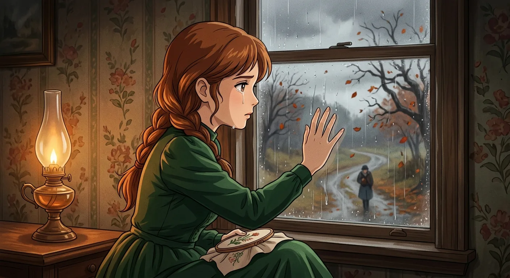
Beth's Secret Heart Revealed
A shadow had fallen over Beth, slight as autumn mist yet plain enough to trouble a mother's watchful heart. Mrs. March confided her worry to Jo one quiet afternoon—Beth sat alone too often now, wept over the babies without cause, and sang only songs tinged with sorrow. The bright, uncomplaining child they knew so well had retreated somewhere they could not follow. When Jo suggested that perhaps Beth was simply growing up, beginning to feel the nameless hopes and fears that visit every young woman at eighteen, her mother sighed and smiled in equal measure, for the truth of it struck home. Still, Marmee charged her second daughter with a gentle mission: discover what weighed upon Beth's tender spirit, but do so without letting the dear girl feel watched or questioned.
Jo set about her task with sisterly devotion, observing Beth from behind the pretense of scribbling at her writing. One Saturday afternoon the clue presented itself. Beth sat at the window, her sewing forgotten in her lap, gazing out at the dull autumn landscape until a familiar whistle sounded below. At once she started, leaned forward, and smiled—then just as quickly the color drained from her cheeks and a single tear slipped down to rest upon the sill. The passer-by was Laurie, striding along full of health and high spirits, and when Beth murmured softly how strong and happy the dear boy looked, Jo's heart seized with sudden understanding.
Retreating to her own room, pale with the shock of her discovery, Jo turned the notion over and over. Beth in love with Laurie! The idea had never once crossed her mind, yet now every small kindness he showed her sister, every gentle word and lingering glance, seemed proof enough. That evening Jo watched the pair more closely than she ever had before. Laurie sat beside Beth on the sofa, entertaining her with lively gossip and tucking the afghan around her feet with an assiduity that appeared almost tender. Jo's lively fancy galloped ahead of common sense, weaving romance from the simplest gestures, until she convinced herself that the two might very well suit one another—if only the rest of the family would step aside.
And so Jo resolved to step aside herself. She proposed to her mother a winter away in New York, ostensibly to teach for Mrs. Kirke and gather fresh material for her writing, but in truth to remove herself from a scene that had grown complicated. For it was not only Beth's supposed attachment that troubled her; Jo suspected—feared, even—that Laurie's affections had begun to fix upon herself in a way she could not return. Marmee, rather than scolding her daughter for want of romance, agreed that the two young people were too alike in temper and too fond of freedom ever to make a contented match. Better to slip away before Laurie spoke and forced her to wound him with refusal.
The night before Jo's departure, she stole to Beth's bedside after hearing a stifled sob in the darkness. Beth would not name her pain, only clung to her sister and wept until exhaustion brought sleep. Jo asked no more, trusting that hearts, like flowers, must open in their own season. She left her "boy" in Beth's charge, bidding her plague him, pet him, and keep him in order—never guessing how far astray her romantic theories had led her, nor how tangled the threads of love and duty would become before they were sorted out again.
As the coach carried Jo toward the bustle of New York and its promise of new scenes and independence, Laurie's parting whisper echoed in her ears: *"It won't do a bit of good, Jo. My eye is on you."* She laughed it off, but somewhere beneath her lightened heart a small foreboding lingered—a sense that this particular trial of the heart would not mend so easily as those that came before, and that the miles between home and the great city could not outrun what waited there to be faced.
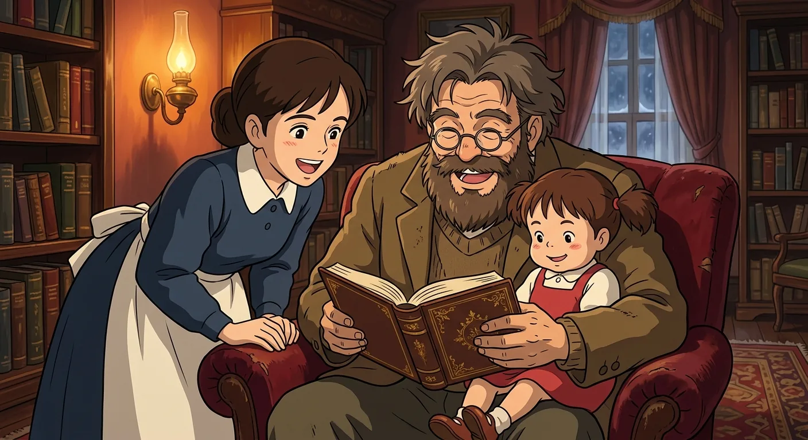
A New Nest in New York
In the epistolary style of a journal-letter home, Jo March chronicles her first months in New York, writing to Marmee and Beth with characteristic warmth, wit, and a candor that only family may receive. She confesses to a briny tear or two upon losing sight of Father's dear face at the station, though an Irish lady with four squalling children soon diverted her spirits—Jo amusing herself by pelting gingerbread nuts into their howling mouths. From that moment the sun emerged, and she resolved to take it as a good omen, clearing up likewise and committing herself to this new adventure with all her heart.
Mrs. Kirke proves a motherly, bustling sort, pressing Jo to feel at home in a great house teeming with strangers. Jo is given a "funny little sky-parlor"—many stairs up, but with a stove, a sunny writing table, and a church tower opposite to atone for the climb—and she takes to her den on the spot. In the nursery she meets her small charges, Kitty and Minnie, and wins them over at once with "The Seven Bad Pigs," fancying herself a model governess already.
Soon a gentleman catches Jo's notice in precisely the way Father would approve—through a trifle that shows character. She observes him taking a heavy hod of coal from a little servant girl's back and carrying it up three flights himself, remarking kindly in a foreign accent that "the little back is too young to haf such heaviness." Mrs. Kirke identifies him as Professor Bhaer, a learned but church-mouse-poor German who supports himself and two orphan nephews by giving lessons. Jo resolves to peep at him through the glass door between nursery and parlor, assuring Marmee that since he is "almost forty" there can be no harm in it.
Her subsequent peeping rewards her richly. She sees a man "rather stout, with brown hair tumbled all over his head, a bushy beard, good nose, the kindest eyes I ever saw," and a voice that does her ears good after American gabble. Though his clothes are rusty and his coat wants two buttons, he looks a gentleman, and when little Tina runs in crying "Me wants me Bhaer!" Jo watches him lift the child high and laugh, her heart softening at once. Later, she pities him through a painful lesson with coquettish, mispronouncing young ladies, and at dinner she notes him shoveling his food—Amy would be horrified—but Jo defends his appetite as only natural for a man who has taught idiots all day.
Their acquaintance deepens by slow, comic increments: Jo darns his socks secretly; he catches her conjugating German verbs in the nursery and proposes lessons in exchange for her "fairy works." When grammar drives them both to despair, he abandons the dry book and brings out Hans Andersen, reading "The Constant Tin Soldier" in his rumbling voice until Jo laughs without understanding half and feels her bashfulness drain away. By Christmas the Professor has given her a treasured Shakespeare—"my library," she calls it proudly—and she has scattered small useful presents about his room, including an embroidered butterfly holder that he sets upon the mantelpiece as "an article of virtue."
The new year finds Jo dressed as Mrs. Malaprop at the house masquerade, surprising the boarders who had thought her stiff and cool; Professor Bhaer cavorts as Nick Bottom with Tina for his Titania, and the whole scene delights her. Reflecting alone afterward, she feels herself getting on a little—cheerful now, working with a will, taking more interest in others—and closes with a postscript that admits her letters have been "rather Bhaery," though she hopes her family will forgive her, for she has always been interested in odd people.
Her words end on a note of quiet contentment, yet there is a tremor beneath—Laurie's name appears only in passing, Beth's health is mentioned with anxious hope, and Jo's heart, for all its independence, seems to be opening wider than she yet realizes.
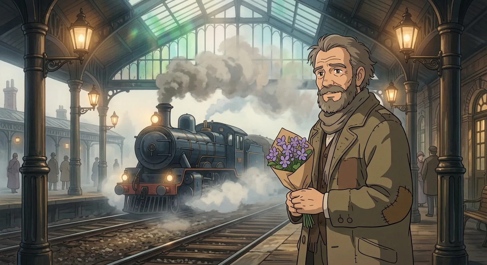
Jo's Dangerous Descent Into Sensation Writing
Though Jo March found genuine contentment in her busy life at Mrs. Kirke's boardinghouse—teaching, working, and soaking in the rich social atmosphere of the city—her restless ambition would not let her pen lie idle for long. The dream that had sustained her since girlhood burned as brightly as ever: to fill the old house at home with every comfort, to give Beth strawberries in winter and an organ in her bedroom, to possess enough that she might indulge freely in the luxury of charity. Money, Jo reasoned, meant power—power to shelter and provide for those she loved more than life itself.
And so, with the novel disaster still smarting and public opinion having proved itself a giant quite capable of shaking even the stoutest-hearted Jacks from their beanstalks, Jo scrambled up the shady side this time. She took to writing sensation stories—thrilling tales of banditti and duchesses, villains and vipers—and boldly carried her first manuscript to Mr. Dashwood at the *Weekly Volcano*. That gentleman, with his feet propped high and his cigar perpetually smoldering, cared nothing for moral reflections and everything for spice. "Morals don't sell nowadays," he pronounced, striking out every passage of repentance Jo had carefully inserted. She swallowed her pride, pocketed her twenty-five dollars, and wrote more.
The little hoard for Beth's mountain trip grew steadily, but so too did a creeping unease Jo could not quite name. She told no one at home, keeping her secret with the same stubborn independence that had always been both her strength and her stumbling block. Worse, in ransacking police records and lunatic asylums for material, in feeding her fancy on dangerous and unsubstantial food, she was beginning—though she scarcely knew it—to brush the innocent bloom from her nature.
It was Professor Bhaer who proved her salvation, though he never preached a word directly at her. That good, rumpled, benevolent German—poor yet always giving, plain yet somehow beautiful—had become Jo's study and her ideal. When one evening he discovered a sensational paper and spoke with honest indignation of the harm such trash could do, Jo felt as if the words *Weekly Volcano* were printed in large type upon her forehead. She went upstairs that very night, reread her stories through what she fancied were the Professor's moral spectacles, and stuffed the whole inflammable bundle into her stove.
The money she kept—her conscience would stretch that far—but Jo wrote no more sensation stories. She tried didactic tales instead, and children's stories, but nothing quite fit her lively fancy. At last she corked up her inkstand and resolved to wait until she knew something worth telling. Meanwhile, the Professor helped her in quieter ways, proving himself a true friend while Jo laid the foundation for the real sensation story of her own life.
When June came and she prepared to leave for home, Mr. Bhaer stood at the station with violets in hand and something wistful in his eyes. Jo, quite unconscious of how deeply she had touched his lonely heart, carried away the happy thought that though she had written no books and earned no fortune, she had made a friend worth keeping all her life—a friend whose influence would prove far more valuable than any sum Mr. Dashwood might have paid.
And yet, as the train pulled away and the Professor returned to his empty rooms, one could not help but wonder whether friendship alone would prove sufficient for either of them in the chapters yet to come.
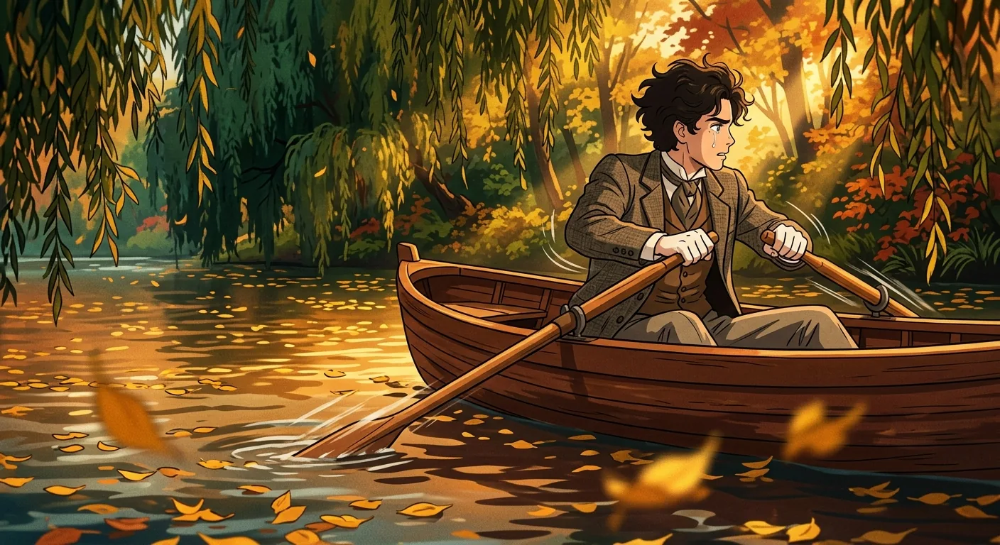
Laurie's Declaration and Jo's Refusal
The day of Laurie's graduation dawned bright with triumph—he had earned his honors with real purpose, delivered his Latin oration with a grace that made his grandfather near burst with pride, and gathered around him the entire March family to witness his success. Yet beneath the laurels and congratulations, a storm was gathering, one that young Jo sensed with mounting dread when Teddy asked her to meet him the following day "as usual." She knew, with that peculiar feminine intuition she so often tried to dismiss, that he meant to speak words she had long dreaded hearing.
Morning found Jo fortifying herself with work and reason, stopping at Meg's to admire baby Daisy and delay the inevitable. But when she spotted Laurie's figure approaching in the distance, her courage nearly failed her altogether. Their walk began with hopeful lightness—he teased her about the forgotten jew's-harp, and she dared to think perhaps her fears were unfounded. But as they turned into the quiet grove, conversation faltered into terrible silences, and at last the dreaded moment arrived.
What followed was as painful an interview as two young hearts ever endured. Laurie, impetuious and earnest, poured forth his love with all the passionate sincerity of youth—how he had loved her since the beginning, how he had reformed his ways and waited patiently, hoping she might learn to care for him as he cared for her. And Jo, dear honest Jo, could only tell him the truth that broke them both: she had tried, but she could not love him as he wished, and pretending otherwise would be the cruelest lie of all.
The boy pleaded and argued, growing desperate when Jo suggested their quick tempers would make them miserable together. He spoke of expectations—his grandfather's hopes, the family's approval—but Jo held fast to her resolution with a strength she herself barely understood. She was homely and odd, she insisted; she loved her liberty and her scribbling too well; they would quarrel and regret. When at last she declared she would never marry him, Laurie turned away with words that chilled her: "You'll be sorry some day, Jo."
He fled to his boat and rowed furiously upriver, while Jo walked home feeling as though she had murdered something innocent and buried it beneath the leaves. True to her nature, she went straight to old Mr. Laurence and confessed everything, weeping over her own hardness of heart until the kind gentleman, though bitterly disappointed, could not reproach her.
That evening, Laurie played the *Sonata Pathétique* as he never had before, and Jo, walking in the garden with Beth, understood his music for the first time. When the broken chord ended his playing, his grandfather went to him in the darkness and offered the only comfort he could—a journey abroad, together, far from the scene of his heartache. The old man knew, as only one who has loved and lost can know, that the boy must be carried away before grief drove him to recklessness.
The weeks before their departure passed in uncomfortable misery—Laurie moody and lovelorn, Jo haunted by guilt, the household treading carefully around the wounded heart in their midst. When the final parting came, Laurie made one last appeal on the doorstep: "Oh, Jo, can't you?" And she, with tears in her voice, could only whisper, "Teddy, dear, I wish I could!"
He straightened himself, murmured that it was all right, and walked away without looking back—and Jo knew, with an ache that would not soon fade, that the boy Laurie she had loved so well as a friend would never come again, and that whatever lay ahead for them both must be something altogether different.
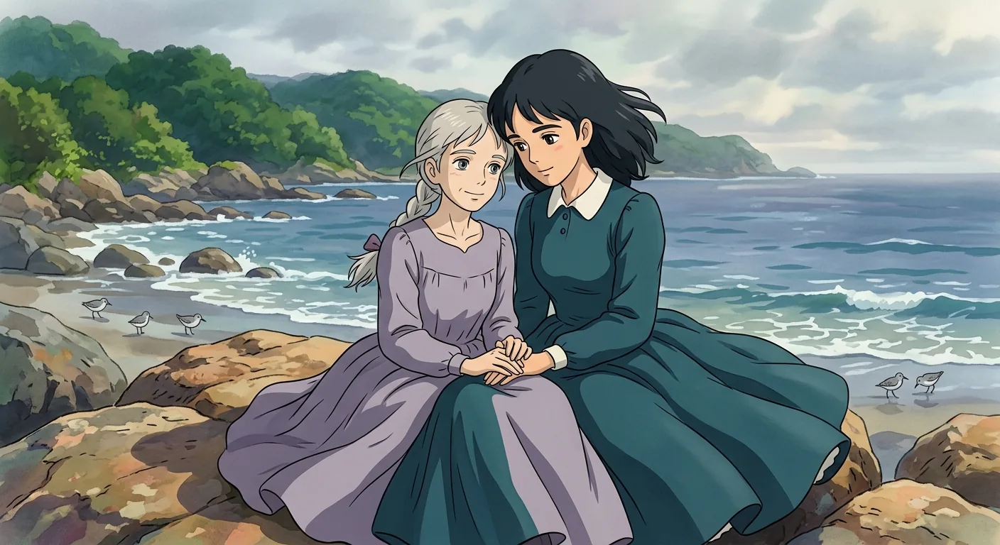
Drifting Away by the Sea
When Jo returned home that spring, she carried with her the sharpened eyes of absence—and what they revealed struck her heart with a weight she could scarcely bear. Beth had changed. No one spoke of it, perhaps because the alteration had crept so gradually upon those who saw her daily that it passed unremarked, but to Jo, the truth was painfully plain. Her sister's face, though scarcely paler or thinner than before, had taken on a strange, transparent quality, as if something immortal were slowly shining through the frail mortal shell with an indescribably pathetic beauty. Jo saw it, felt it in her very bones, yet held her tongue, and soon the press of daily life dulled her first sharp impression—for Beth seemed content, and everyone else appeared to believe she was mending.
Yet when Laurie had gone and quiet settled once more over the household, Jo's vague anxiety crept back to haunt her. She proposed a mountain excursion with her savings, hoping fresh air and adventure might restore her sister's strength, but Beth gently declined, asking instead for a return to the seashore. And so the two sisters went alone to a quiet, unfashionable place by the sea, where Beth could live in the open air and let the salt breezes paint some color upon her pale cheeks. They made few friends there, preferring to be all in all to one another, quite unconscious of the sympathetic glances that followed them—the strong sister and the feeble one, always together, as if both sensed that a long separation was drawing near.
They did feel it, yet neither spoke, for between those who love best there often exists a reserve most difficult to overcome. Jo waited for Beth to break the silence, and one quiet day upon the warm rocks, with the wind blowing healthfully and the sea murmuring at their feet, Beth did at last confide her secret. She had known for a long while, she admitted, that she was not going to recover. She had kept the knowledge to herself through the autumn, unwilling to burden the family when Marmee was anxious about Meg and Jo seemed so happy with Laurie. Jo's heart ached to think of Beth bearing that solitary struggle alone, learning to say goodbye to health and life while cheerfully taking up her cross.
In their tender, tearless embrace, old misunderstandings fell away. Jo confessed that she had once imagined Beth in love with Laurie—the very reason she had gone away—and Beth looked so astonished that Jo could not help but smile through her pain. Beth loved Laurie only as a brother, she insisted, and hoped he might truly become one someday through Amy. Jo declared she had no heart for such matters now; nothing mattered but keeping Beth well.
But Beth, with gentle firmness, asked Jo not to hope any longer. Her tide was turning, she said, slowly but unstoppably, and all she wished was that they might enjoy being together while they waited. She spoke of the little gray sand birds she loved, calling them peeps—busy, quaker-colored creatures content near the shore—and likened Jo to the wild, storm-loving gull, Meg to the turtledove, and Amy to the ambitious lark who never forgets her nest. She confessed she had never imagined herself grown up or married, only "stupid little Beth, trotting about at home." The hardest part, she whispered, was leaving them all.
Jo leaned down and kissed that tranquil face, silently dedicating herself, soul and body, to her sister's remaining days. When they returned home, no words were needed; Father and Mother saw plainly what they had prayed to be spared from seeing, and as Marmee stretched out her arms for help, Jo went to comfort her without a word—knowing now that the sacred duty of standing by her parents through the coming sorrow had already begun.
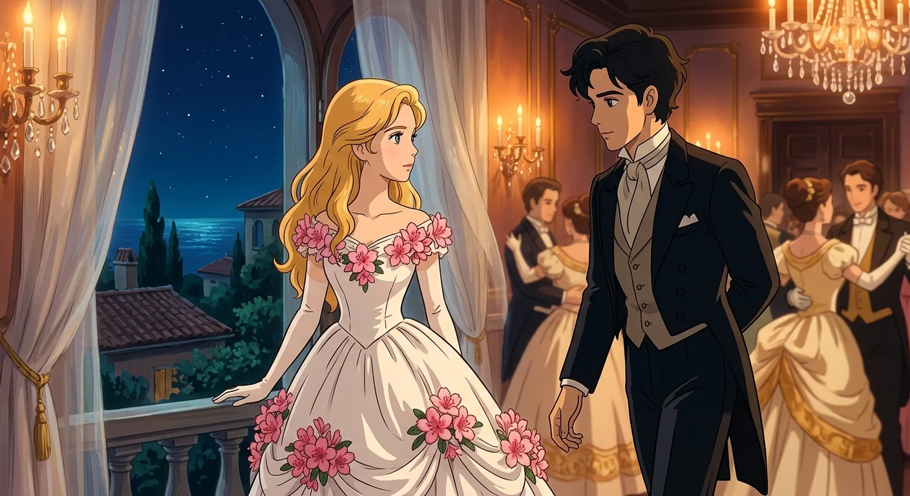
Amy and Laurie Reunite Abroad
On Christmas Day along the Promenade des Anglais at Nice, where all fashionable society parades beneath palms and tropical blooms with the sea glittering on one side and grand hotels on the other, a tall young man walks with an absent air about him. He looks Italian, dresses like an Englishman, and carries himself with that unmistakable American independence—our Laurie, though changed in ways that will soon perplex those who knew him best. His eye catches a blonde girl in blue driving one of those charming little basket carriages, and in an instant his whole countenance transforms as he waves his hat like the boy he once was.
Amy drops her reins quite scandalously to greet him, and soon the two are driving together toward Castle Hill, catching up on months of separation. Yet something troubles Amy as she steals glances at her old friend. The merry-faced boy she left behind has grown moody and spiritless, older and graver than prosperous European travel ought to have made him. She cannot puzzle out the cause and dares not ask, though we who have followed our young people's hearts can guess well enough what shadow lies upon his.
News from home mingles with their reunion—Beth is very poorly, the letters say, though all urge Amy to stay and make the most of her precious opportunity abroad. Laurie draws nearer at this sobering talk, and his brotherly "my dear" lightens the fear that sometimes weighs upon Amy's heart. A little sketch of Jo in her scribbling suit makes him smile, and he tucks it into his vest pocket with a tenderness he perhaps does not fully understand himself.
At the ruins of the old fort, where splendid peacocks come trooping for crumbs, each young person studies the other with fresh eyes. Laurie finds Amy sprightly and graceful as ever, with an added elegance that time abroad has given her. She has gained aplomb without losing her native frankness, and he carries away a pretty picture of her standing golden-haired in the sunshine—a picture that will prove more consequential than either suspects.
That evening, Amy deliberately prinkes for the Christmas ball, for she has seen her old friend in a new light, not as "our boy" but as a handsome and agreeable man. In borrowed white silk covered with fresh illusion and rosy clusters of azalea, she waits beneath the chandelier, then thinks better of such obvious positioning and retreats to the window—where Laurie finds her posed as effectively as any statue and greets her as Diana. The ball brings its share of comic characters: a stout Frenchman who dances like an India-rubber ball, a German Serene Something seeking supper, a flock of plain Davises gamboling about. Amy dances with spirit and grace while Laurie, maddeningly indifferent at first, watches her with growing appreciation. By evening's end he has filled her dance card with his own name, and both of them are giving and receiving new impressions that neither yet fully comprehends.
What fruit these impressions may bear, and how the shadow on Laurie's heart may lift or deepen, only time and further chapters shall reveal.
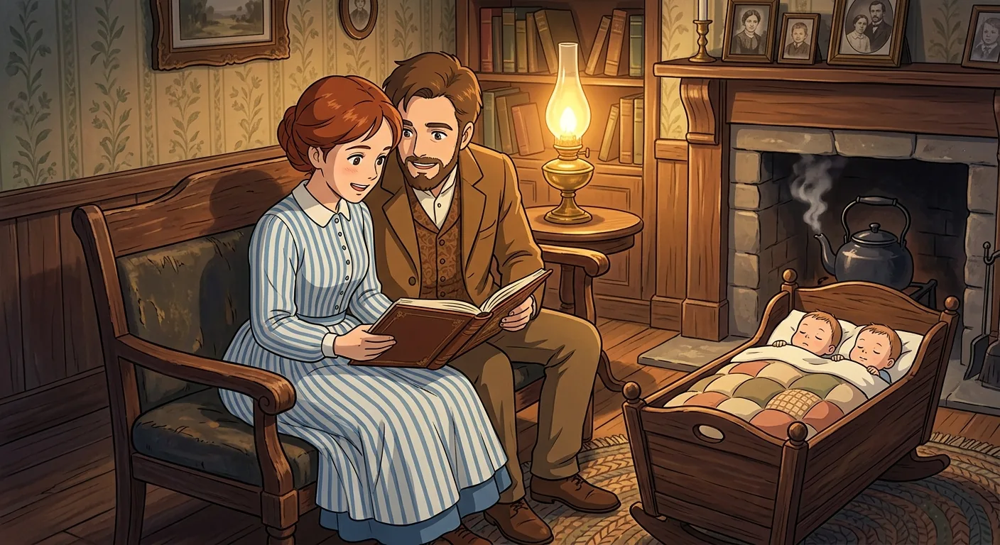
Domestic Trials of Young Motherhood
When young Mrs. Brooke's twins reached their first year, she found herself so thoroughly absorbed in the tender occupation of motherhood that she quite forgot there existed in the world a creature called husband who might require some small portion of her attention. Day and night Meg brooded over her precious Daisy and Demi with that tireless devotion peculiar to womanly little women, leaving poor John to fend for himself under the indifferent ministrations of Kitty, the Irish cook, who took life decidedly "aisy" and kept the master of the house on short commons indeed.
The domestic man that John was, he bore his exile from wife and fireside with patient cheerfulness for six long months, supposing with that masculine ignorance common to husbands that peace would soon be restored. But peace did not come. If he arrived home eager to embrace his family, he was hushed like a noisy intruder in the sacred precincts of Babyland. If he suggested an evening's amusement, he was met with reproachful looks and firm refusals. His sleep was broken by infant wails, his meals interrupted by the perpetual flight of his wife to answer every muffled chirp from above, and even his newspaper reading suffered, for Mrs. Brooke cared nothing for stocks or shipping—only for colic and teething.
Finding his own parlor empty and his wife forever singing endless lullabies, John did what other paternal exiles do—he sought a little comfort at the Scotts' house nearby, where Mrs. Scott, a lively pretty girl with nothing to do but be agreeable, kept a bright parlor, a ready chessboard, and tempting little suppers always at hand.
Meg approved the arrangement at first, relieved to know John was entertained elsewhere. But when the babies began sleeping at proper hours and she found herself alone with her workbasket, she grew resentful—hurt that John could not divine her wishes without being told, forgetting entirely those many evenings she had left him waiting in vain. Looking in her glass, she saw only a faded, thin woman whose husband preferred his pretty neighbor's company to her own.
It was Marmee who found her daughter in tears and drew out the trouble with gentle firmness. But instead of the sympathy Meg expected, her mother offered a mirror of truth: the fault, dear daughter, was her own. She had forgotten her duty to her husband in her love for her children—a natural mistake, but one that must be remedied before husband and wife grew into strangers.
With the wisdom born of her own early struggles with little Jo and frail Meg, Marmee counseled her daughter to let John share in the management of Demi, to accept Hannah's help with the babies, to take exercise and keep cheerful, and above all, to make home so pleasant that John would never wish to leave it. "Don't shut yourself up in a bandbox because you are a woman," she urged, "but understand what is going on, and educate yourself to take your part in the world's work."
Meg took the preachment to heart and resolved to try. Her first social evening with John met with some interference from young Demi, whose most unconquerable prejudice was against going to bed, but the experiment proved instructive nonetheless. John's firm but loving management of his rebellious son—sitting unmoved through the roaring, then discovered later with the penitent child asleep in his arms—showed Meg she had gained a true partner in the business of parenting.
Gradually the little house transformed. John read to Meg about elections while she trimmed bonnets; they attended concerts together; Hannah helped with the children while Meg recovered her spirits through exercise and cheerful occupation. Home grew homelike again, full of happiness and family love—even envied by wealthy Sallie Moffatt, who could not purchase such contentment for all her splendid loneliness. John and Meg had found the key to that treasury of mutual helpfulness which the poorest may possess, learning together that a woman's happiest kingdom is home, ruled not as a queen, but as a wise wife and mother walking side by side with her faithful house-band through fair weather and stormy alike.
Yet even as the Brooke household found its peaceful rhythm, other members of the March family were navigating waters far less tranquil—for love has a way of arriving unbidden, and the heart does not always choose its hour wisely.
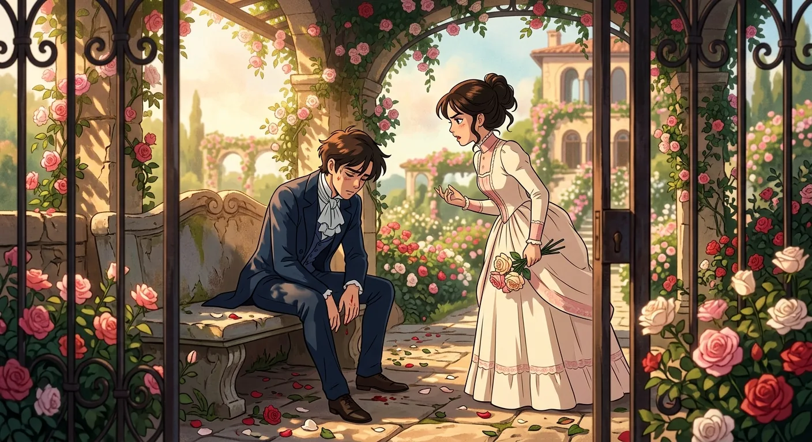
Roses, Thorns, and Drifting Hearts
What Laurie intended as a mere week's visit to Nice stretched languorously into a full month, for the young wanderer found in Amy's company a familiar warmth that no amount of flattering attention from strangers could replicate. She was the nearest thing to home he had, and he clung to that comfort even as he drifted through the gay season in a fog of willful idleness. They were much together—riding, walking, dancing, dawdling—and while they appeared to be merely amusing themselves, each was quietly forming opinions of the other. Amy rose daily in Laurie's estimation, her grace and gratitude winning his admiration; but he, alas, sank steadily in hers, and those keen blue eyes of hers watched him with a mixture of sorrow and scorn that he could neither dismiss nor ignore.
On a lovely afternoon when the rest of the party had gone to Monaco, Amy invited Laurie to accompany her to Valrosa, a villa whose very name promised roses in abundance. The drive wound through scenes of picturesque beauty—ancient monasteries, barefoot shepherds, mouse-colored donkeys laden with fresh-cut grass—until they arrived at gardens so thick with blooms that crimson and white petals seemed to tumble from every archway and fountain. Yet even amid such loveliness, thorns pricked. When Laurie reached for a vivid scarlet rose and wounded his thumb, Amy offered him instead three pale cream-colored blossoms, unknowingly stirring his superstitious Italian heart—for such roses were laid in dead hands, never in bridal wreaths, and he could not help wondering whether the omen pointed to Jo or to himself.
It was there, on that sun-warmed terrace, that Amy delivered the lecture she had been composing in her mind for weeks. She and Flo had christened him "Lazy Laurence," she announced, and she did not spare his feelings in cataloguing his faults: he was selfish, wasteful, disappointing to all who loved him, content to be petted by silly people when he might have been accomplishing something worthy of his gifts. Her words stung more than she perhaps intended, for they forced Laurie to confront what he had been hiding even from himself. Bit by bit, through half-spoken hints and telltale signs—the shadow on his face at Jo's name, the little ring he still wore, the way his voice broke when he said "Teddy"—Amy divined the truth her sister had never confided. Laurie loved Jo, and Jo had refused him.
Her manner softened then, though she did not retract her criticism. Instead she showed him two sketches: one of the languid young man he had become, lounging with a cigar and listless eyes; the other of the spirited boy she remembered taming a horse at home, all energy and command. The contrast was pointed, and Laurie felt it keenly. He said little, but his flush and the set of his lips told Amy that her lesson had struck home.
They parted at her aunt's door with a hearty English handshake rather than any sentimental French flourish, and the next morning a note arrived in place of his usual call. "Lazy Laurence" had gone to his grandfather at last, he wrote, and he signed himself, with rueful affection, "Telemachus." Amy smiled at the tribute, glad that her words had roused him—yet she could not help glancing about the empty room and sighing, for she would miss him more than she cared to admit.
And so, as the winter season at Nice went on without him, both young people found themselves changed by their encounter—Amy more certain of what she wanted from life, and Laurie, at last, beginning to stir from the stupor of his heartbreak toward something that might yet prove worthy of him.
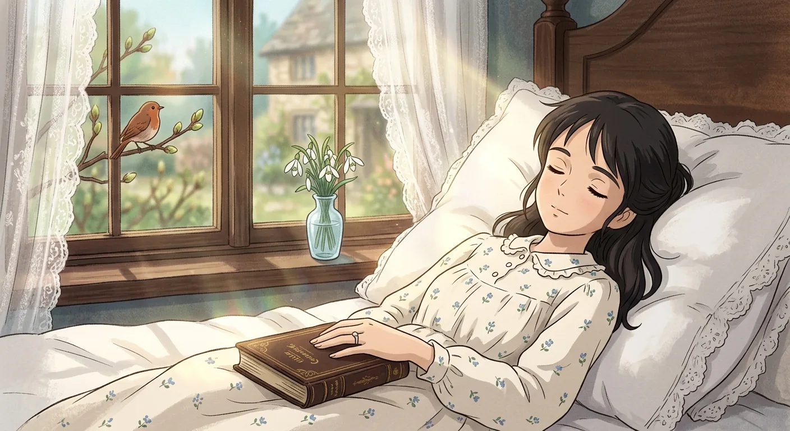
Beth's Sacred Farewell
When the first sharp grief had spent itself, the March family did what loving families must—they accepted what could not be changed and resolved to make Beth's remaining months as bright and beautiful as they knew how. The pleasantest room in the house became Beth's own little kingdom, filled with everything dear to her heart: her piano, her workbasket, her beloved cats, and the tokens of affection each family member pressed upon her daily. Father brought his finest books, Mother her easy chair, Jo her writing desk, and Amy her prettiest sketches. Meg made faithful pilgrimages with the babies, whose crowing and kicking brought sunshine to their failing aunt, while John quietly set aside money for the fresh fruit Beth craved, and old Hannah wept over the dainty dishes she prepared with tireless devotion. Even from across the sea came little gifts and cheerful letters, carrying warmth from lands that knew no winter.
And there Beth sat, cherished like a household saint, tranquil and busy as ever, for nothing could alter her sweet, unselfish nature. Though preparing to leave life, she labored still to brighten it for others—stitching mittens for cold little hands passing beneath her window, crafting needlebooks and scrapbooks until the schoolchildren came to regard her as a fairy godmother showering gifts upon them. If Beth wanted any reward, she found it in their upturned faces and their blotted, grateful letters.
For a time, these were happy months. The family gathered in Beth's sunny room while Father read aloud from wise old books, his voice faltering with emotion as he taught the hard lessons that hope might comfort love and faith make resignation possible. But by and by, Beth said her needle had grown too heavy and laid it down forever. Pain claimed her, and her tranquil spirit grew sorrowfully troubled—such heavy days, such long nights, such aching hearts forced to hear her cry, "Help me, help me!" and know there was no help to give. Yet the rebellion was brief, and soon the old peace returned more beautiful than before. Though her frail body failed, Beth's soul grew strong, and those who loved her understood she was ready.
Jo never left her sister's side, sleeping on a couch by the fire, prouder of this sacred duty than of any honor her life had ever brought. Here Jo's restless heart received the teaching it so needed—lessons in patience, charity, and the faith that fears nothing. Watching Beth read her worn little book through sleepless nights, hearing her sing softly or seeing tears fall through her thin fingers, Jo recognized at last the beauty of her sister's quiet, unambitious life—the self-forgetfulness that makes the humblest remembered soonest in heaven.
One night Beth discovered among her books a tear-stained poem in Jo's hand, verses praising her patience, her courage, her gentle spirit, and promising that death could not truly part them. The poem brought Beth inexpressible comfort, assuring her that her life had not been wasted. In the tender conversation that followed, the sisters pledged themselves to one another across the threshold of eternity, and Jo renounced her old ambitions for a new and better one, finding blessed solace in the immortality of love.
So the spring days came and went. The sky cleared, the earth greened, and the birds returned in time to bid Beth farewell. Like a tired but trustful child, she clung to the hands that had guided her all her life as Father and Mother led her gently through the valley of shadow. In the dark hour before dawn, on the bosom where she had drawn her first breath, Beth quietly drew her last—no farewell but one loving look, one little sigh.
When morning came, Jo's place stood empty and the fire was out, but a bird sang on a budding bough, snowdrops blossomed at the window, and spring sunshine streamed in like a benediction over the peaceful face upon the pillow—so full of painless peace that those who loved her best smiled through their tears and thanked God that Beth was well at last.
Now the family must learn to walk forward without her gentle presence, carrying her memory as both wound and balm into whatever days awaited them.
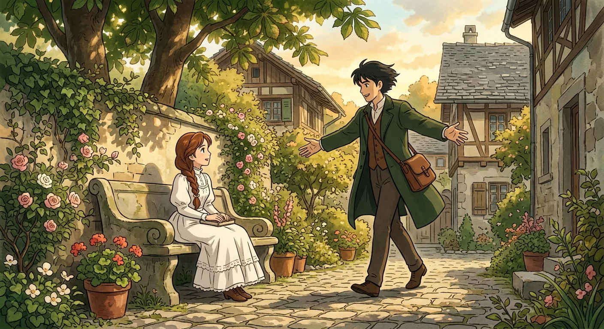
Laurie's Heart and Ambitions Transform
Amy's frank lecture at Nice worked upon Laurie more powerfully than he cared to admit—though of course he would never have owned it aloud, for young gentlemen seldom credit feminine counsel until they have persuaded themselves the notion was their own all along. Still, her sharp words pricked his pride and stirred him to action, and he returned to his grandfather with such dutiful devotion that the old gentleman declared the southern climate must have done wonders. Yet no force on earth could have dragged Laurie back to Nice after such a scolding; whenever temptation beckoned, he fortified himself by recalling Amy's most cutting phrases—"I despise you" and "Go and do something splendid that will make her love you."
Determined to prove that a girl's refusal had not ruined him, Laurie threw himself into music, meaning to compose a grand Requiem that would harrow Jo's soul and melt every heart. Off he went to Vienna, full of artistic resolve, only to discover that his sorrow refused to stay solemn; whenever he attempted a plaintive strain, some lively tune from the Nice ball would intrude, and the tragedy collapsed into laughter. An opera fared no better, for when he tried to cast Jo as his heroine, memory obligingly supplied images of her beating mats with a bandanna round her head or dousing his passion with cold water—hardly the stuff of romantic arias. Another figure, golden-haired and wrapped in roses and blue ribbons, floated into his imagination far more obligingly, though Laurie would not yet give her a name.
In time the work lost its charm, and Laurie grew restless, conscious of some inward change he could not explain. After hearing a Mozart opera performed at the Royal Theatre, he compared his own scribblings to the masters, tore his sheets to pieces, and admitted the humbling truth: talent is not genius, and pretending otherwise makes a man a humbug. Temptations enough beset an idle young fellow with money and leisure, yet Laurie held steady, kept honest by his promise to his grandfather and his wish to look squarely into the eyes of the women who loved him.
Most astonishing of all, the wound Jo had inflicted healed far more quickly than he expected. He stirred the embers of his lost love, but they refused to blaze; instead a comfortable glow settled in, tender and a little wistful, promising to ripen into a brotherly affection that would endure. Restless still, he wrote one last plea to Jo—couldn't she, wouldn't she change her mind?—but her answer was decisive. She was wrapped up in Beth, wished never to hear the word love again, and begged him only to write often to Amy, who must not yet know how ill her sister had grown.
Laurie turned at once to that task, and as he rummaged for paper he discovered Amy's letters tied with a blue ribbon, fragrant with little dried roses, lying beside Jo's carelessly tumbled notes. Quietly he gathered Jo's letters, slipped off the ring she had once returned, locked them away, and went to hear Mass—feeling as though he had attended a funeral and ought to mark it soberly. From that day the correspondence with Amy flourished, her lively pages full of gossip and charming sketches, his replies tender and teasing. Meanwhile, Amy quietly refused Fred Vaughn's proposal, troubled by memories of her own mercenary words and Laurie's gentle reproof. She no longer wished to be a queen of society; she longed only to be a lovable woman, worthy of someone whose opinion she had come to value more than she quite understood.
When at last the sad news of Beth's death reached Amy in Switzerland, Laurie came at once, crossing the courtyard of the old garden at Vevay to find her sitting alone, homesick and heavy-hearted. She looked up, saw him, and ran into his arms crying, "Oh, Laurie, Laurie, I knew you'd come to me!" In that moment everything was said and settled; both felt the truth and were satisfied to leave the rest to silence. Days of walking, boating, and quiet talk followed, and at last, drifting on the sunlit lake beneath the Alps, Laurie asked simply if she would pull in the same boat with him always—and Amy, very low, answered yes.
So it was that two hearts, schooled by sorrow and taught by time, found in each other the comfort and hope they needed—and began together a new chapter neither had foreseen.
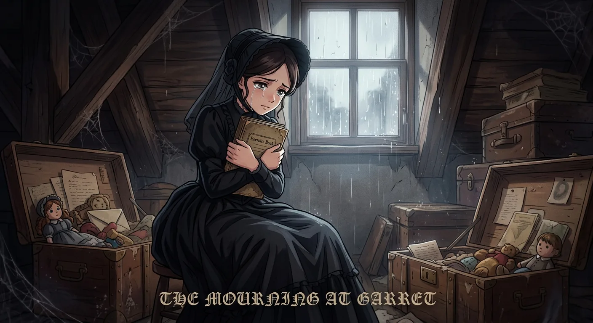
Grief's Slow Path to Healing
How easy it had been, in those final sacred weeks, to whisper promises at Beth's bedside—to vow she would comfort Father and Mother, keep the house cheerful, find some useful work to fill her hands and heart. But promises made while love still breathes beside us prove far harder to honor when that beloved presence has slipped away, leaving nothing but silence and an aching emptiness where warmth once dwelt. Jo discovered this bitter truth in the dark days that followed, when grief wrapped itself around her like a shroud and duty felt less like devotion than like chains.
She tried, in her blind and stumbling way, to do what was expected. Yet secretly her spirit rebelled against a fate that seemed cruelly unjust—her joys diminished, her burdens multiplied, while others appeared to bask in perpetual sunshine. Poor Jo, who had always craved adventure and purpose, now saw before her only the prospect of quiet rooms and humdrum cares stretching endlessly forward. "I can't do it," she confessed to herself in her darkest moments. "I wasn't meant for a life like this."
But help came, though not in the dramatic form her restless nature might have wished. It arrived instead through familiar shapes and simple spells—the patient tenderness of Marmee's arms around her in the night, when Jo woke crying for her sister; the tranquil wisdom of Father in his study, where she unburdened her troubled heart and found, for the first time, that they could speak together not merely as parent and child but as two souls equally in need of consolation. Sacred moments these were, when affliction softened into blessing and grief, chastened by love, grew easier to bear.
Other humble helps revealed themselves as well. The brooms and dishcloths Beth had once wielded became less distasteful when Jo found herself humming her sister's songs, imitating her orderly ways, keeping everything fresh and cozy as Beth would have wished. Hannah noticed, and Meg too—dear Meg, so grown and wise in her happiness with John and the babies, who spoke gently of love's power to open even the prickliest of hearts.
And then there was writing. When Marmee urged her to take up her pen again, Jo protested she had no heart for it, that nobody cared for her work. But she tried nonetheless, and something got into that story—truth, her father called it, humor and pathos drawn from her own sorrow—that went straight to the hearts of all who read it. The little tale found its way into a magazine, earned both payment and praise, and opened a door Jo had nearly despaired of finding. "You have found your style at last," Father told her, and Jo, deeply moved, credited whatever good existed in her words to those she loved.
When news arrived of Amy and Laurie's engagement, Jo surprised even herself by receiving it with quiet grace. She was glad for them, truly—though reading Amy's rapturous words about love and heaven stirred that old restless longing within her. Wandering up to the garret on a rainy afternoon, she came upon her childhood chest and, among its relics, a bundle of old exercise books from her time at Mrs. Kirke's. A little message in Professor Bhaer's hand caught her eye: *"Wait for me, my friend. I may be a little late, but I shall surely come."*
The words blurred as tears fell. "Oh, if he only would," Jo whispered, clutching the paper like a promise. Everyone seemed to be going away, and she felt so terribly alone. Whether it was mere loneliness or something deeper stirring at last within her heart, who could say?
But the rain would not fall forever, and spring, with all its possibilities, was surely drawing near.
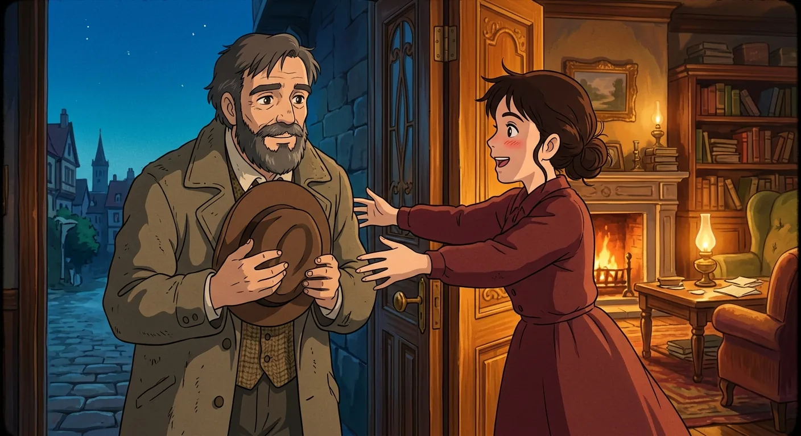
Laurie's Return and Joyful Revelation
In the violet hour of dusk, Jo lay upon the old sofa in her favorite attitude of reverie, Beth's little red pillow tucked beneath her head, gazing into the fire's shifting patterns while her thoughts turned melancholy. Tomorrow would bring her twenty-fifth birthday, and the years seemed to have flown away with little to show for their passing. She had resigned herself, with that mixture of wry humor and quiet sorrow that was peculiarly her own, to the prospect of becoming a literary spinster—a woman wedded only to her pen, mother to nothing but stories, and destined for whatever morsel of fame might come too late to be savored. Yet even as she sighed over such a future, fortune was preparing to upend her solitary musings in the most delightful fashion.
A figure materialized before her—Laurie's ghost, she thought at first, until a kiss proved him wonderfully substantial. The old friends embraced with all the warmth of their long affection, Jo crying out her blessed "Teddy" while Laurie beamed with barely concealed triumph. He had come bearing astonishing news: he and Amy were married, wed quietly six weeks prior at the American consul's office in Paris, their honeymoon spent among the roses of Valrosa. Jo's characteristic exclamations of mock horror gave way to genuine delight as Laurie settled beside her on the sofa, though both felt the invisible barrier that time and changed circumstances had erected between them. Yet this new distance proved no impediment to honest speech. With manly gravity, Laurie confessed that his love for Jo had altered rather than vanished—transformed into something brotherly and true—and that Amy now occupied the place in his heart that Jo had once refused. The old playmates acknowledged together that childhood's frolics were behind them, that they must now be brother and sister in earnest, helping one another through whatever sober work lay ahead.
Soon the whole family trooped in, bringing Amy radiant in her new dignity as Mrs. Laurence, her former affectations softened into genuine grace. The elder Laurence had returned mellowed and kindly; the twins seized upon the general distraction to pilfer tarts; and all was warmth and chatter and happy reunion. Yet when the party moved upstairs, Jo lingered behind, suddenly conscious of her loneliness—until a knock at the door delivered her true birthday surprise. There stood Professor Bhaer, bearded and beaming, drawn to the city by some unnamed business and to this house by something more than coincidence.
The Professor was welcomed into the family circle as though he had always belonged there, the children claiming his knees, Mr. March discovering a kindred intellect, and Jo knitting industriously to hide the joy that threatened to betray her. When at last they sang together—she warbling tunelessly, he pouring German feeling into the old song about the land where citrons bloom—the tender invitation in his voice seemed meant for her alone. After the guests departed and the house grew quiet, Jo slipped away to bed, wondering what business had really brought him. Had she glimpsed him later, kissing her photograph in the dark of his room, she might have guessed the answer—but that revelation, like so much else, would have to wait for what tomorrow might bring.
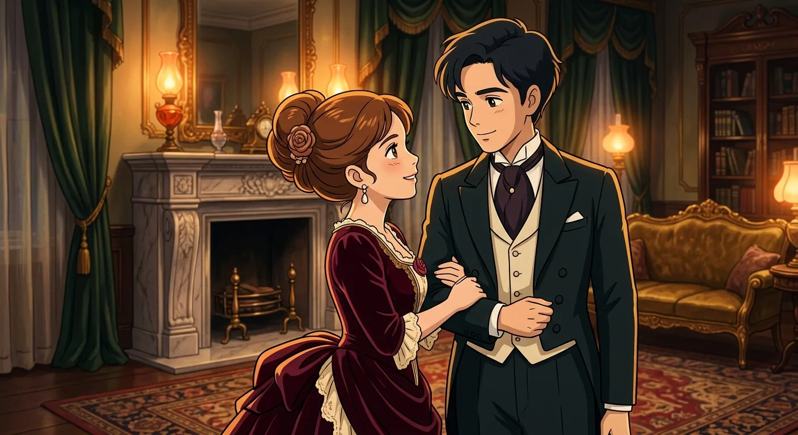
Newlyweds Plan Their Future Together
The newlywed Laurences have scarcely been home a day before Laurie appears at the March household, playfully requesting to borrow his wife back—for he has made a hopeless muddle of their Paris luggage whilst hunting for his bootjack, and cannot manage without his "little woman" any more than a weathercock can spin without the wind. Amy, seated contentedly in her mother's lap as though she were the baby of the family once more, rises with a matronly air that delights her husband, gently teasing him about the helplessness of men. Mrs. March releases her daughter's white hand—the one now wearing its wedding ring—with a tender, almost apologetic press, as if asking pardon for her maternal reluctance to let go.
Jo, quite restored to her old saucy self since Teddy's return, inquires what the young couple mean to do with themselves once settled. Laurie declares with newfound energy that he intends to go into business with a devotion that will prove to his grandfather he is not spoiled—that he is tired of dawdling and means to work like a man. Amy speaks more mysteriously of elegant hospitalities and brilliant society, though inwardly she resolves that a proper home with a good wife must come before any salon. After they depart, Mr. March finds it difficult to return to his Aristotle, remarking how happy those children seem, while Mrs. March wears the restful expression of a pilot who has brought a ship safely into port. Jo sighs "Happy Amy!"—then smiles brightly as Professor Bhaer pushes open the gate with characteristic impatience.
Later that evening, in the privacy of their own drawing room, Laurie broaches the subject plainly: that man intends to marry their Jo. Amy hopes so, though Laurie confesses he wishes the Professor were younger and richer. This prompts Amy to declare that love matters more than money—then catch herself short, remembering her own former mercenary ambitions. What follows is a tender reckoning between husband and wife, as Laurie reassures her that she proved true to her mother's teaching when she refused a richer man for him. Amy, in turn, confesses she is prouder of her handsome husband than of all his fortune, finding peculiar comfort even in the noble cut of his nose.
When Amy gently asks whether he will mind if Jo marries the Professor, Laurie answers with wholehearted warmth—he can dance at Jo's wedding with a heart as light as his heels. Amy's little jealous fear vanishes forever, and gratitude fills her face.
Their conversation turns then to philanthropy, as the young pair pace arm in arm through the long drawing room, dreaming of the good they might do together. They speak of helping struggling artists and ambitious girls, of assisting the proud gentlefolk who will not ask for charity, of using their wealth wisely while alive rather than leaving cold legacies. Amy will be a little Dorcas with her basket of comforts; Laurie, a brave St. Martin sharing his cloak with beggars. They shake hands upon the bargain, their home made more homelike by hopes of brightening others, their hearts knit closer by a love that tenderly remembers those less blessed.
And so, with one young couple's future secured in mutual purpose and affection, the family's attention turns toward another match—one that would require neither fortune nor worldly advantage, only the courage to speak what the heart already knows.
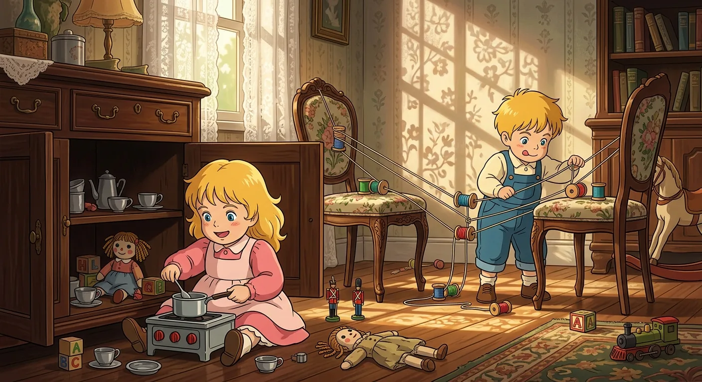
Twins Learning Life and Love
No chronicle of the March family could be deemed complete without a proper introduction to its two smallest and most adored members—the twins Daisy and Demi Brooke, who had by now reached that age of three or four years when modern babies assert their rights with remarkable success. If ever a pair of children teetered on the precipice of being utterly ruined by devotion, it was these prattling little souls, whose every accomplishment was received by the household as evidence of unprecedented genius.
Daisy, that rosy, sunshiny creature, had already demanded her own needle and produced a bag of four miraculous stitches, while conducting elaborate housekeeping operations in the sideboard with a miniature cooking stove that moved Hannah to proud tears. Her brother Demi, meanwhile, displayed a mechanical bent that delighted his father and thoroughly distracted his mother, for the nursery existed in perpetual chaos thanks to his inventions—most notably a contraption of string, chairs, and spools meant to serve as an elevator, in which his trusting sister allowed her head to be bumped repeatedly before rescue arrived.
Though utterly unlike in temperament, the twins quarreled no more than thrice daily, with Demi tyrannizing over his sister while gallantly defending her from all other aggressors, and Daisy adoring him as the single perfect being in existence. Little Daisy possessed the gift of finding her way into every heart, declaring each morning a "pitty day" regardless of weather, and offering kisses so freely that even the most hardened bachelors succumbed to her charms. Her grandmother watched over her with particular devotion, calling her "Beth" and seeing in the child's serene and loving nature a blessed reminder of the angel they had only recently lost.
Demi, true Yankee that he was, possessed an inquiring mind that led to philosophical discussions with his grandfather—conversations in which the precocious pupil occasionally bested his teacher. When asked where he kept his mind, the boy stood meditatively on one leg before announcing with calm conviction that it resided "in my little belly," sending both grandparents into helpless laughter.
Yet amid the twins' charming reign, a disruption arrived in the form of Mr. Bhaer, whose evening visits drew Aunt Dodo's attention away from her small playmates. Daisy found herself bereft of her best customer for kisses, while Demi, though wounded, could not bring himself to resent a rival whose pockets contained chocolate drops and whose watch could be freely examined. The Professor's devotion to the children was sincere—not the counterfeit affection some gentlemen manufacture for the young relations of ladies they admire—and soon little Daisy claimed his shoulder as her throne.
One evening, Mr. Bhaer discovered Mr. March prone upon the floor with legs in the air, teaching letters through gymnastics, and the resulting conversation proved most illuminating. Young Demi, with artless frankness, confessed to kissing little Mary and liking it very much, then turned his innocent gaze upon the Professor to inquire whether great boys liked great girls too. Mr. Bhaer's somewhat vague reply caused Mr. March to set down his brush and sink into his chair with a new idea taking root, while Jo's face colored and retreated from view.
Why Aunt Dodo afterward caught Demi in the china closet and squeezed him breathless with affection instead of scolding him, then rewarded him with bread and jelly, remained a mystery the small philosopher could never solve—though readers of keener perception might guess that a certain question about great boys and great girls had prompted in Jo a surge of feeling she could express only through unexpected tenderness toward the small cupid who had, quite unwittingly, spoken aloud what others dared not say.
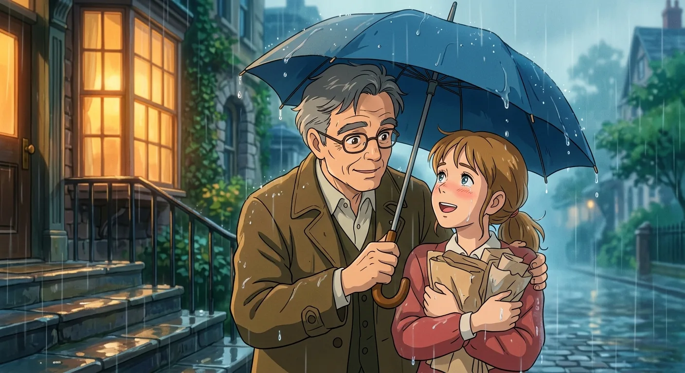
Under the Umbrella at Last
While Laurie and Amy were busy arranging their elegant domestic affairs and treading upon velvet carpets as they planned their gilded future, Mr. Bhaer and Jo were engaged in promenades of an altogether different character—tramping along muddy roads and through sodden fields, their paths mysteriously converging with remarkable regularity. Jo told herself, quite sensibly, that she had always taken an evening walk and saw no reason to abandon the habit simply because she happened to encounter the Professor on his way out. Yet whichever path she chose to Meg's, there he would be, seemingly startled to recognize her until they were nearly upon one another, always bearing some small gift for the babies or claiming he had merely strolled down to see the river.
By the second week, everyone in the March household understood perfectly well what was transpiring, though they maintained a careful pretense of blindness to the changes in Jo's face—the singing about her work, the hair done up three times daily, the blooming complexion attributed to evening exercise. No one remarked upon the Professor's hat appearing on the Marches' table nearly every evening, nor did anyone acknowledge that while he discussed philosophy with Father, he was giving the daughter rather different lessons altogether.
Jo, who could not even lose her heart in a decorous manner, sternly tried to quench her feelings and, failing utterly, led a somewhat agitated life. She dreaded being laughed at for surrendering after her many vehement declarations of independence, but Laurie—thanks to his new manager Amy—behaved with praiseworthy propriety, saving his exultation for private moments.
Then the Professor stayed away for three whole days, and Jo grew pensive, then cross, convincing herself he had gone home as suddenly as he had come. On a dull afternoon, she set out walking—new bonnet on her head, little umbrella forgotten—ostensibly to run errands but somehow finding herself wandering among counting-houses and warerooms where gentlemen most congregate, loitering before windows displaying engineering instruments with most unfeminine interest. When rain began to fall, she scolded herself for philandering about hoping to see him, resolved to trudge through the wet as penance—and promptly rushed across the street into the path of a truck and the arms of an offended gentleman.
It was then that a dilapidated blue umbrella appeared above her unprotected bonnet, and looking up, she found Mr. Bhaer looking down.
What followed was a promenade of contradictions—Jo's voice and manner shifting from warm to cool, her heart lifting at his news of a teaching position only to plummet when she learned it was out West. Through bungled errands and upset needle trays, through the purchase of oranges and grapes and a little dress for Tina, the Professor watched her blush and blunder until he began to understand that on some occasions, women go by contraries.
At last, when Jo's weary despair brought tears to her cheeks and she confessed she was crying because he was going away, the truth came rushing out. There on the steps, surrounded by mud and mist, with pockets distorted by knobby bundles and hands too full for proper gestures, Friedrich asked if she could make a little place in her heart for old Fritz. Jo's answer—an impetuous "Oh, yes!"—was followed by the most improper kiss under that old umbrella, and she would have done it if the draggle-tailed sparrows on the hedge had been human beings, for she was very far gone indeed.
They spoke of patience, of waiting, of duties still to be fulfilled—he to his boys out West, she to her work at home—yet both were content, for love made all the rest easy to bear. And when at last they reached the March doorstep, Jo led her lover in from the night and storm and loneliness to the household light and warmth and peace, shutting the door upon the crowning moment of both their lives—a moment that promised, in its very simplicity, the beginning of something rich and enduring.
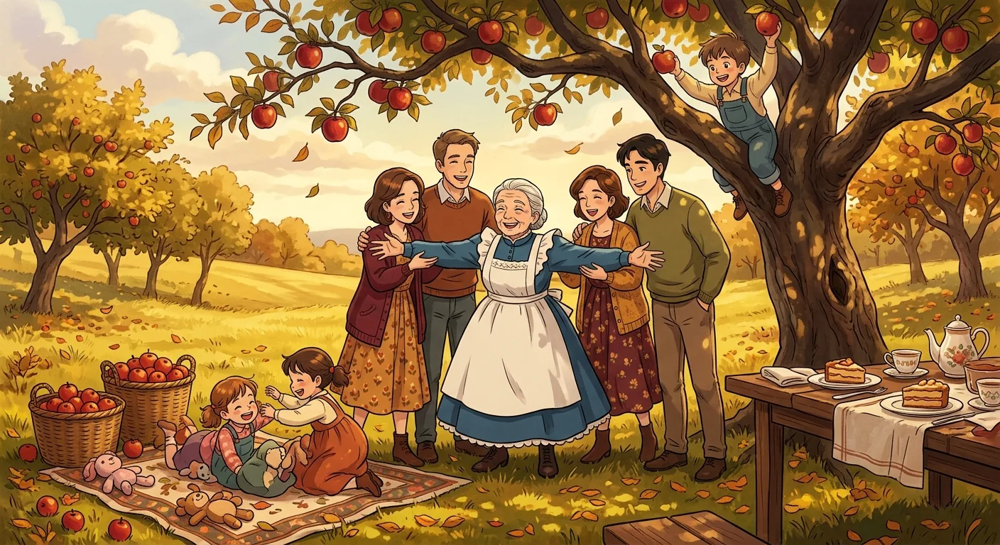
A School for Little Lads
A year of patient labor and tender longing passed for Jo and her Professor—a year marked by voluminous correspondence (Laurie jested that they alone had driven up the price of paper), by occasional meetings bright with hope, and by the quiet, steadfast certainty that their hearts were rightly given. When the second year opened more soberly, their prospects still dim, sorrow visited them: Aunt March died suddenly, leaving behind a grief that caught them by surprise, for they had loved the sharp-tongued old lady better than they knew. Yet within that sorrow lay an unexpected blessing, for the will revealed that Plumfield had been left to Jo—and with it, the key to a cherished dream.
When Laurie assumed she would sell the grand old estate, Jo's decided refusal startled them all. She meant to live there, she declared, and not merely to live, but to cultivate a most unusual crop: boys. The plan spilled forth with all her old enthusiasm—a good, happy, homelike school for little lads who needed teaching, care, and kindness, with her Fritz to guide their minds and herself to mother their hearts. It was a vision she had harbored long before love came knocking, born of her sympathy for forlorn children who too often went to ruin for want of help at the right moment. Now, thanks to her aunt's generosity, the means had arrived to make the dream real. The family rallied around her—Mrs. March clasping her hand in wordless approval, Father eager to try the Socratic method on modern youth, and Mr. Laurence delighted to find a way, at last, to help without offending proud Jo's independence.
And so, almost before she knew where she was, Jo found herself married and settled at Plumfield, the halls of that prim old house soon ringing with the cheerful chaos of half a dozen boys who sprang up like mushrooms. Mr. Laurence, that sly benefactor, kept discovering touching cases of destitution until ragamuffins mingled freely with the sons of the well-to-do, and the sacred precincts Aunt March had guarded so fiercely became a boys' paradise—the "Bhaer-garten," as Laurie wittily named it. It was uphill work at first, full of queer mistakes, but Father Bhaer's patient wisdom and Mother Bhaer's inexhaustible faith in the good hidden within the naughtiest little heart brought success in time. Two sons of her own arrived to crown her happiness—Rob, named for Grandpa, and sunny little Teddy—and the family flourished amid the perpetual racket like dandelions in spring.
Five years after the wedding, the clan gathered for the yearly apple-picking, that most delightful of Plumfield holidays. On a mellow October day, with goldenrod fringing the mossy walls and crickets chirping like fairy pipers, the Marches, Laurences, Brookes, and Bhaers turned out in full force. Jo rushed about with her gown pinned up and baby tucked under her arm, while the Professor led whooping charges through the green aisles and Laurie devoted himself to the little ones. At the outdoor tea, the boys drank toasts to dear Aunt March, to Grandma's sixtieth birthday, and to every soul present, down to the astonished guinea pig, and a hidden choir serenaded Mrs. March with a song Jo had written and Laurie set to music.
Afterward, the sisters rested beneath the festival tree and spoke of their old castles in the air. Meg's modest wish for a little home, a loving husband, and dear children had come true in full. Amy, though a shadow of sorrow fell across her sunshine—her frail little daughter the cross she bore—found her nature deepening through love and trial, and still cherished hopes of beauty wrought in marble. Jo confessed that the life she once imagined seemed selfish and cold beside the rich abundance before her now; she had not abandoned her dream of writing a good book, but she could wait, certain the pages would be richer for such illustrations as these.
When Jo declared her harvest hardly matched her mother's patient sowing, Marmee stretched out her arms to gather children and grandchildren close, her face luminous with gratitude and humility. "Oh, my girls," she said, "however long you may live, I never can wish you a greater happiness than this!" And so the little women, now grown into mothers themselves, stood together in the golden orchard light—their story not ended, but gathered into the fullness of the life they had each chosen, ready for whatever chapters yet remained to be written.
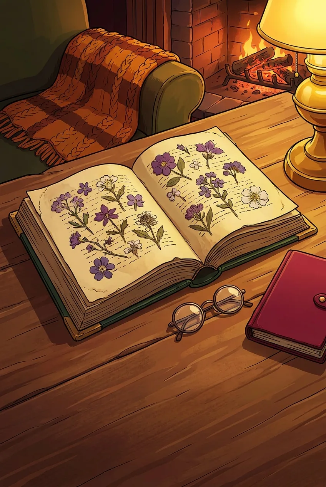